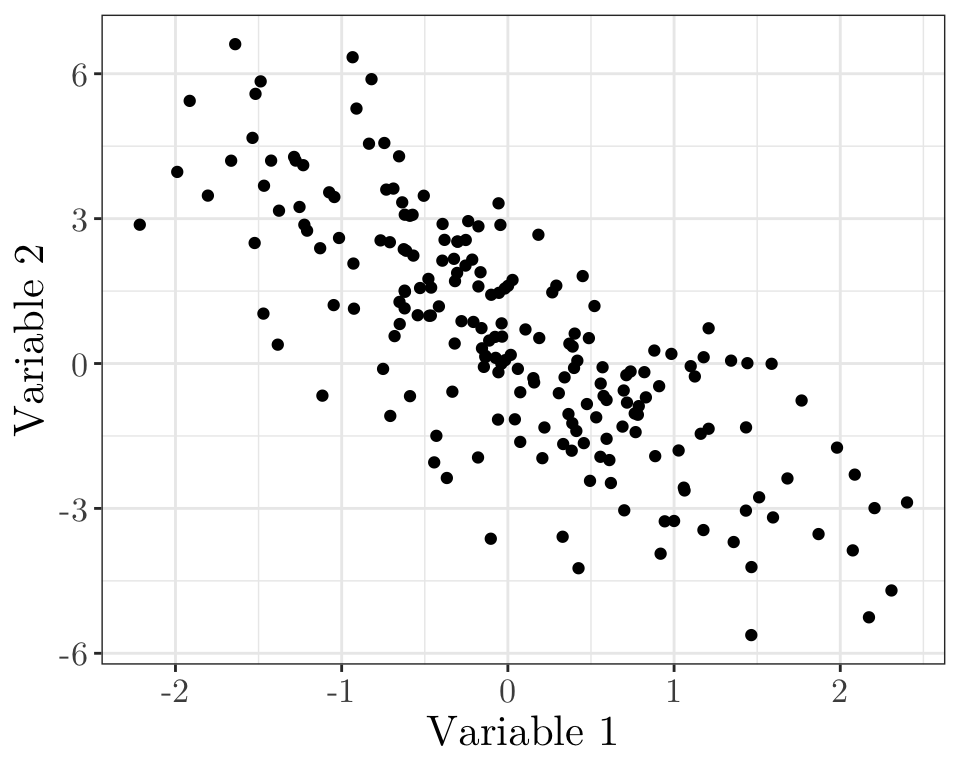
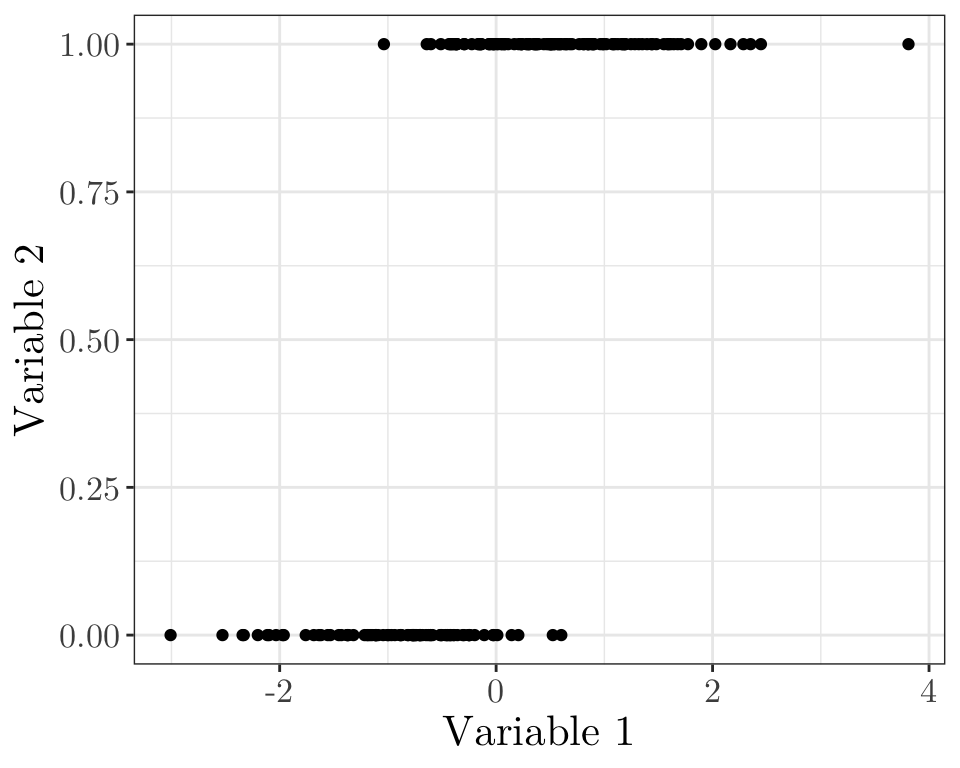
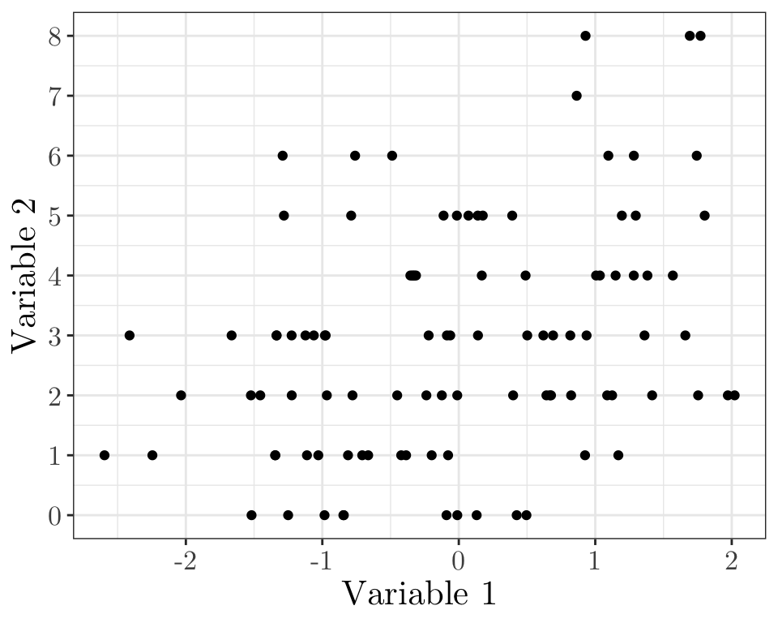

Statistical Modelling II (MATH3091)
Part II, Chapter 5: Generalised Linear Models
07/03/2025
Preface
The aim of this chapter is to cover the theory and application of generalised linear models (GLMs).
These slides are based on material written by previous lecturers of this course, including Sujit Sahu, Dave Woods, and Chao Zheng.
Schedule
| Week | Lab | Session 1 (Thursday) | Session 2 (Friday) | Session 3 (Friday) | Problem sheet |
|---|---|---|---|---|---|
| 07 | No lab | 5.1 Exponential family | 5.2 Components of a GLM | 5.3 Examples of GLMs | Sheet 4 |
| 08 | Lab 5 | 5.4 MLE | 5.5 Confidence intervals | PC: sheet 4 | |
| 09 | Lab 6 | 5.6 Comparing GLMs | 5.7 Deviance | 5.8 Models with unknown scale | Sheet 5 |
| 10 | Lab 7 | 6.1 Contingency tables | 6.2 Log-linear models | PC: sheet 5 | |
| 11 | Lab 8 | 6.3 Multinomial sampling | 6.4 Interpretation for two-way tables | 6.5 Interpretation for multiway tables | Sheet 6 |
| 12 | Lab 9 | Revision | Revision | PC: sheet 6 |
Chapter 5: Generalised Linear Models
Lecture 5.1: Exponential family
Linear model quiz 01 (vevox.app, 160-892-474)
Does it look like a linear model might be appropriate here?
Linear model quiz 02 (vevox.app, 160-892-474)
Does it look like a linear model might be appropriate here?
Linear model quiz 03 (vevox.app, 160-892-474)
Does it look like a linear model might be appropriate here?
Linear model quiz 04 (vevox.app, 160-892-474)
Does it look like a linear model might be appropriate here?
Introduction
The linear model in Chapter 3 assumes each response \(Y_i \sim N(\mu_i, \sigma^2)\), where the mean \(\mu_i\) depends on explanatory variables through \(\mu_i = x_i^{\top} \beta\).
For many types of data, this assumption of normality of the response may not be justified. For instance, we might have
- Binary response \((Y_i \in \{0, 1\})\), e.g., representing whether or not a patient recovers from a disease. A natural model is that \(Y_i \sim \text{Bernoulli}(p_i)\), and we might want to model how the “success” probability \(p_i\) depends on explanatory variables \(x_i\).
- Count response \((Y_i \in \{0, 1, 2, 3, \cdots\})\), e.g., representing the number of customers arriving at a shop. A natural model is that \(Y_i \sim \text{Poisson}(\lambda_i)\), and we might want to model how the rate \(\lambda_i\) depends on explanatory variables.
Introduction
Next, we define the exponential family, which includes the Bernoulli and Poisson distributions as special cases. In a generalised linear model, the response distribution is assumed to be a member of the exponential family.
To complete the specification of a generalised linear model, we will need to model how the parameters of the response distribution (e.g. the success probability \(p_i\) or the rate \(\lambda_i\)) depend on explanatory variables \(x_i\). We need to do this in a way which respects constraints on the possible values which these parameters may take; for instance, we should not model \(p_i = x_i^{\top} \beta\) directly, as we need to enforce \(p_i \in [0, 1]\).
Exponential family
Important
A probability distribution is said to be a member of the exponential family if its probability density function (or probability function, if discrete) can be written in the form
\[ f_Y(y;\theta,\phi)=\exp\left({{y\theta-b(\theta)}\over{a(\phi)}} +c(y,\phi)\right), \qquad(1)\]
where the parameter \(\theta\) is called the natural or canonical parameter. The parameter \(\phi\) is usually assumed known. If it is unknown then it is often called the nuisance parameter.
Exponential family
Let \(Y\) be a random variable with density \(f_Y(y;\theta,\phi)\) as in Equation 1, then
\[ \mathbb{E}(Y) = b'(\theta)~~~~~\text{and}~~~~~ \text{Var}(Y) = a(\phi)b''(\theta). \]
We often denote the mean by \(\mu\), so \(\mu = b'(\theta)\).
The variance is a product of two functions
- \(b''(\theta)\) depends on the canonical parameter \(\theta\) (and hence \(\mu\)) only and is called the variance function (\(V(\mu)\equiv b''(\theta)\)).
- \(a(\phi)\) is sometimes of the form \(a(\phi)=\sigma^2/w\) where \(w\) is a known weight and \(\sigma^2\) is called the dispersion parameter or scale parameter.
Exponential family (proof)
Equation 1 can be thought of as a likelihood resulting from a single observation \(y\). Therefore,
\[\ell(\theta,\phi)={{y\theta-b(\theta)}\over{a(\phi)}} +c(y,\phi)\]
and the score is
\[u(\theta)=\frac{\partial}{\partial \theta}\ell(\theta,\phi) ={{y-\frac{\partial}{\partial \theta} b(\theta)}\over{a(\phi)}} ={{y- b'(\theta)}\over{a(\phi)}}.\]
The Hessian is
\[H(\theta)=\frac{\partial^2}{\partial \theta^2}\ell(\theta,\phi) =-{{\frac{\partial^2}{\partial \theta^2} b(\theta)}\over{a(\phi)}} =-{{b''(\theta)}\over{a(\phi)}}\]
so the expected information is
\[{\cal I}(\theta)=\mathbb{E}[-H(\theta)]=b''(\theta)/a(\phi).\]
Exponential family (proof continued)
From the properties of the score function (Chapter 2), we know that \(\mathbb{E}[U(\theta)]=0\). Therefore,
\[\mathbb{E}\left[{{Y- b'(\theta)}\over{a(\phi)}}\right]=0,\]
so \(\mathbb{E}[Y]=b'(\theta)\). We often denote the mean by \(\mu\), so \(\mu=b'(\theta)\).
Furthermore, \[ \text{Var}[U(\theta)]= \text{Var}\left[{{Y- b'(\theta)}\over{a(\phi)}}\right]= {{\text{Var}[Y]}\over{a(\phi)^2}}, \]
as \(b'(\theta)\) and \(a(\phi)\) are constants (not random variables).
We also know that \(\text{Var}[U(\theta)]={\cal I}(\theta)\) (Chapter 2). Therefore,
\[ \text{Var}[Y]=a(\phi)^2\text{Var}[U(\theta)]=a(\phi)^2 {\cal I}(\theta) = a(\phi)b''(\theta). \]
Example (Bernoulli distribution)
Suppose \(Y \sim \text{Bernoulli}(p)\). Then,
\[\begin{align*} f_Y(y;p)&= p^y(1-p)^{1-y}\qquad y\in\{0,1\};\quad p\in(0,1)\cr &= \exp\left(y\log{p\over{1-p}}+\log(1-p)\right) \end{align*}\]
This is in the form of Equation 1, with \(\theta=\log{p\over{1-p}}\), \(b(\theta)=\log(1+\exp\theta)\), \(a(\phi)=1\) and \(c(y,\phi)=0\).
Therefore, \[\mathbb{E}(Y)=b'(\theta)={{\exp\theta}\over{1+\exp\theta}}=p~~~~~\text{and}~~~~~\text{Var}(Y)=a(\phi)b''(\theta)={{\exp\theta}\over{(1+\exp\theta})^2}=p(1-p)\] and the variance function is \[V(\mu)=\mu(1-\mu).\]
Example (Poisson distribution)
Suppose \(Y \sim \text{Poisson}(\lambda)\). Then,
\[\begin{align*} f_Y(y;\lambda)&= {{\exp(-\lambda)\lambda^y}\over{y!}} \qquad y\in\{0,1,\cdots\};\quad\lambda\in{\mathbb R}_+\cr &= \exp\left(y\log\lambda-\lambda-\log y!\right). \end{align*}\]
This is in the form Equation 1, with \(\theta=\log\lambda\), \(b(\theta)=\exp\theta\), \(a(\phi)=1\) and \(c(y,\phi)=-\log y!\).
Therefore, \[\mathbb{E}(Y)=b'(\theta)=\exp\theta=\lambda~~~~~\text{and}~~~~~\text{Var}(Y)=a(\phi)b''(\theta)=\exp\theta=\lambda \] and the variance function is \[V(\mu)=\mu.\]
Example (Normal distribution)
Suppose \(Y\sim \text{Normal}(\mu, \, \sigma^2)\). Then,
\[\begin{align*} f_Y(y;\mu,\sigma^2)= {1\over{\sqrt{2\pi\sigma^2}}} \exp\left(-{1\over{2\sigma^2}}(y-\mu)^2\right)\quad\;\; y\in\mathbb{R};\;\;\mu\in\mathbb{R}\cr = \exp\left({{y\mu-{1\over 2}\mu^2}\over \sigma^2}-{1\over 2}\left[ {{y^2}\over\sigma^2}+\log(2\pi\sigma^2)\right]\right). \end{align*}\]
This is in the form of Equation 1, with \(\theta=\mu\), \(b(\theta)={1\over 2}\theta^2\), \(a(\phi)=\sigma^2\) and
\[ c(y,\phi)=-{1\over 2}\left[ {{y^2}\over{a(\phi)}}+\log(2\pi\sigma^2)\right]. \]
Therefore, \[\mathbb{E}(Y)=b'(\theta)=\theta=\mu~~~~~\text{and}~~~~~\text{Var}(Y)=a(\phi)b''(\theta)=\sigma^2\] and the variance function is \[V(\mu)=1.\]
Summary
- We have defined the Exponential family, showed that it contains many common distributions, and found simple expressions for the mean and variance.
- In a generalised linear model, the distribution of the response is assumed to be a member of the exponential family.
- To complete the model, we still need to write down how the mean \(\mu_i\) depends on explanatory variables. We will look at this next time.
Chapter 5: Generalised Linear Models
Lecture 5.2: Componentes of a GLM
Recap
A probability distribution is said to be a member of the exponential family if its probability density function (or probability function, if discrete) can be written in the form
\[ f_Y(y;\theta,\phi)=\exp\left({{y\theta-b(\theta)}\over{a(\phi)}} +c(y,\phi)\right), \]
where
\[ \mathbb{E}(Y) = b'(\theta)~~~~~\text{and}~~~~~ \text{Var}(Y) = a(\phi)b''(\theta). \]
Components of a Generalised Linear Model (GLM)
As in a linear model, the aim is to determine the pattern of dependence of a response variable on explanatory variables.
We denote the \(n\) observations of the response by \(\mathbf{y}=(y_1,y_2,\cdots ,y_n)^{\top}\), assumed to be observations of the random variables \(\mathbf{Y}=(Y_1,Y_2,\cdots ,Y_n)^{\top}\).
Associated with each \(y_i\) is a vector \(\mathbf{x}_i=(x_{i1},x_{i2},\cdots ,x_{ip})^{\top}\) of \(p\) explanatory variables.
In this setting, we want to model how the distribution of \(Y_i\) depends on \(\mathbf{x}_i\).
The random component
In a GLM, each \(Y_i\) is assumed to be an independent random variable. All the \(Y_i\)’s are assumed to have distribution coming from the same exponential family, but with a potentially different value of the parameters.
The functions \(a(\cdot)\), \(b(\cdot)\) and \(c(\cdot)\) are the same for each \(Y_i\), but the canonical parameter \(\theta\) (and sometimes the scale parameter \(\phi\)) may differ.
We have \[ f_{Y_i}(y_i;\theta_i,\phi_i)= \exp\left({{y_i\theta_i-b(\theta_i)}\over{a(\phi_i)}} +c(y_i,\phi_i)\right) \] for \(i = 1, \cdots, n\), where \(\boldsymbol{\theta}=(\theta_1,\cdots ,\theta_n)^{\top}\) is the collection of canonical parameters and \(\boldsymbol{\phi}=(\phi_1,\cdots ,\phi_n)^T\) is the collection of nuisance parameters (where they exist).
Likelihood for \(\boldsymbol{\theta}\) and \(\boldsymbol{\phi}\)
For a particular sample of observed responses, \(\mathbf{y}=(y_1,y_2,\cdots ,y_n)^{\top}\), the likelihood function for \(\boldsymbol{\theta}\) and \(\boldsymbol{\phi}\) is \[\begin{align*} \mathcal{L}(\boldsymbol{\theta}, \boldsymbol{\phi}) &= \prod_{i=1}^n f_{Y_i}(y_i;\theta_i,\phi_i) \\ &= \exp\left(\sum_{i=1}^n{{y_i\theta_i-b(\theta_i)}\over{a(\phi_i)}} +\sum_{i=1}^nc(y_i,\phi_i)\right) \end{align*}\]
However, we do not want to estimate \(\boldsymbol\theta\) and \(\boldsymbol\phi\) directly.
Bernoulli example
Suppose I ask the entire MATH3091 class a question, e.g.,
“What is the MLE of the Poisson rate parameter \(\lambda\), given samples \(y_1, \cdots, y_n\)?”
Let \[ Y_i = \begin{cases} 1 & \text{if person $i$ gets question correct} \\ 0 & \text{otherwise}. \end{cases} \]
We can model \(Y_i \sim \text{Bernoulli}(p_i)\), where \(p_i\) is the unknown probability that person \(i\) will get the question correct.
The response distribution belongs to the exponential family, with canonical parameter \(\theta_i = \log\left(\frac{p_i}{1 - p_i}\right)\), and with no scale parameter, i.e., \(a(\phi) = 1\).
MLE for \(p_1\) (vevox.app, 160-892-474)
Suppose \(n = 10\), and \(\mathbf{y} = (1, 0, 0, 1, 1, 1, 1, 0, 0, 1)^{\top}\).
What is the MLE of \(p_1\)?
- \(\hat p_1 = 0\)
- \(\hat p_1 = 1 - \bar y = 0.4\)
- \(\hat p_1 = \bar y = 0.6\)
- \(\hat p_1 = 1\)
MLE for \(p_2\) (vevox.app, 160-892-474)
Suppose \(n = 10\), and \(\mathbf{y} = (1, 0, 0, 1, 1, 1, 1, 0, 0, 1)^{\top}\).
What is the MLE of \(p_2\)?
- \(\hat p_2 = 0\)
- \(\hat p_2 = 1 - \bar y = 0.4\)
- \(\hat p_2 = \bar y = 0.6\)
- \(\hat p_2 = 1\)
We are not really interested in the individual \(p_i\). Instead, we might be interested in modelling each \(p_i\) as a function of explanatory variables \({\mathbf x}_i\) (e.g. number of lectures person \(i\) attended, whether person \(i\) completed problem sheet 1, etc.).
The systematic (or structural) component
In a GLM, the distribution of the response variable \(Y_i\) depends on \(\mathbf{x}_i\) through the linear predictor \(\eta_i\), such that \[\begin{align*} \eta_i &=\beta_1 x_{i1} +\beta_2 x_{i2} + \cdots + \beta_p x_{ip} = \sum_{j=1}^p x_{ij} \beta_j = \mathbf{x}_i^T \boldsymbol{\beta} = [\mathbf{X}\boldsymbol{\beta}]_i, \end{align*}\] where, \(i = 1,\cdots, n\), as with a linear model, \[ \mathbf{X}=\begin{pmatrix} \mathbf{x}_1^{\top}\cr\vdots\cr \mathbf{x}_n^{\top} \end{pmatrix} =\begin{pmatrix} x_{11}&\cdots&x_{1p}\cr\vdots&\ddots&\vdots\cr x_{n1}&\cdots&x_{np}\end{pmatrix} \] and \(\boldsymbol{\beta}=(\beta_1,\cdots ,\beta_p)^{\top}\) is a vector of unknown parameters.
The design matrix
There are different ways to describe the linear predictor, however, the most economical is the matrix form \[\boldsymbol{\eta}=\mathbf{X}\boldsymbol{\beta}.\]
Again, we call the \(n\times p\) matrix \(\mathbf{X}\) the design matrix.
The \(i\)-th row of \(\mathbf{X}\) is \(\mathbf{x}_i^{\top}\), the explanatory data corresponding to the \(i\)-th observation of the response. The \(j\)-th column of \(\mathbf{X}\) contains the \(n\) observations of the \(j\)-th explanatory variable.
The link function
For specifying the pattern of dependence of the response variable on the explanatory variables, the canonical parameters \(\boldsymbol{\theta}\) are not of direct interest.
Recall that the distribution of \(Y_i\) should depend on \(\mathbf{x}_i\) through \(\eta_i\). It is the parameters \(\beta_1, \cdots ,\beta_p\) of the linear predictor which are of primary interest.
The link between the distribution of \(\mathbf{Y}\) and \(\mathbf{\eta}\) is given by the link function \(g\), \[ \eta_i=g(\mu_i),\quad i = 1, \cdots, n, \] where \(\mu_i\equiv \mathbb{E}(Y_i),\;i = 1, \cdots, n\).
So the dependence of the distribution of \(Y_i\) on explanatory variables is \[ g(\mathbb{E}[Y_i])=g(\mu_i)=\eta_i=\mathbf{x}_i^{\top}\boldsymbol{\beta},\quad i = 1, \cdots, n. \]
Bernoulli example
Returning to our previous example, where
\[ Y_i = \begin{cases} 1 & \text{if person $i$ gets question correct,} \\ 0 & \text{otherwise}, \end{cases} \] and \(Y_i \sim \text{Bernoulli}(p_i)\), we have \(\mu_i = \mathbb{E}(Y_i) = p_i\).
\[ \text{Let}~~~x_i = \begin{cases} 1 & \text{if person $i$ has completed problem sheet 1,} \\ 0 & \text{otherwise}, \end{cases} \] and \[\eta_i = \beta_1 + \beta_2 x_i.\]
We would like to choose a link function \(g(p_i) = \eta_i\) with the following properties
- \(\eta_i \in \mathbb{R}\), \(p_i \in (0, 1)\), so \(g: (0, 1) \to \mathbb{R}\)
- As \(\eta_i \to \infty\), \(p_i = g^{-1}(\eta_i) \to 1\).
- As \(\eta_i \to -\infty\), \(p_i = g^{-1}(\eta_i) \to 0\).
Choosing the link function
In principle, the link function \(g\) can be any one-to-one differentiable function.
However, \(\eta_i\) can take any value in \(\mathbb{R}\) (as we make no restriction on possible values taken by explanatory variables or model parameters).
Recall that for some exponential family distributions \(\mu_i\) is restricted. For example, for the Poisson distribution \(\mu_i\in\mathbb{R}_+\); for the Bernoulli distribution \(\mu_i\in(0,1)\).
If \(g\) is not chosen carefully, then there may exist a possible \(\mathbf{x}_i\) and \(\boldsymbol{\beta}\) such that \(\eta_i\ne g(\mu_i)\) for any possible value of \(\mu_i\).
Therefore, sensible choices of link function map the set of allowed values for \(\mu_i\) onto \(\mathbb{R}\).
Likelihood for \(\boldsymbol\beta\)
The likelihood function for \(\boldsymbol{\theta}\) and \(\boldsymbol{\phi}\) is \[ \mathcal{L}(\boldsymbol{\theta}, \boldsymbol{\phi}) = \exp\left(\sum_{i=1}^n{{y_i\theta_i-b(\theta_i)}\over{a(\phi_i)}} +\sum_{i=1}^nc(y_i,\phi_i)\right). \] So the likelihood function for \(\boldsymbol{\beta}\) and \(\boldsymbol{\phi}\) is (\(\mu_i = \mathbb{E}(Y_i) = b'(\theta_i)\)) \[ \mathcal{L}(\boldsymbol{\beta}, \boldsymbol{\phi}) = \exp\left(\sum_{i=1}^n{{y_i b^{'-1}(g^{-1}(\mathbf{x}_i^{\top}\boldsymbol{\beta})-b(b^{'-1}(g^{-1}(\mathbf{x}_i^{\top}\boldsymbol{\beta}))}\over{a(\phi_i)}} +\sum_{i=1}^nc(y_i,\phi_i)\right). \] We will assume for now that \(\mathbf \phi\) is known. Later, we will also with cases where \(\phi_i = \sigma^2/m_i\), where \(\sigma^2\) is an unknown dispersion parameter, and \(m_i\) are known weights.
Canonical link
We have \[ \theta_i=b^{'-1}(g^{-1}(\mathbf{x}_i^{\top}\boldsymbol{\beta})),\quad i = 1, \cdots, n. \]
If \(g\) and \(b^{'-1}\) are identical, then \[ \theta_i=\mathbf{x}_i^{\top}\boldsymbol{\beta}\qquad i = 1, \cdots, n \] and the resulting likelihood is \[ \mathcal{L}(\boldsymbol{\beta})= \exp\left(\sum_{i=1}^n{{y_i\mathbf{x}_i^{\top}\boldsymbol{\beta}-b(\mathbf{x}_i^{\top}\boldsymbol{\beta})}\over{a(\phi_i)}} +\sum_{i=1}^nc(y_i,\phi_i)\right). \] The link function \[ g(\mu)\equiv b^{'-1}(\mu) \] is called the canonical link function. Under the canonical link, the canonical parameter is equal to the linear predictor.
Bernoulli example
Returning to our previous example, we can compute the canonical link function for \(Y \sim \text{Bernoulli}(p)\), where \(\mu = \mathbb{E}(Y) = p\).
Recall that, for the Bernoulli distribution (previous lecture), \[ b(p) = \log(1 + \exp p) \] Thus, the canonical link is \[\begin{align*} \frac{d}{dp}b(p) = b'(p) &= \frac{\exp p}{1 + \exp p} \\ \mu &= \frac{\exp p}{1 + \exp p} \implies p = \log\left(\frac{\mu}{1 - \mu}\right) = \text{logit}(\mu), \end{align*}\] i.e., the canonical link function for this example is \(g(\mu) = \text{logit}(\mu)\).
Canonical link functions
| Distribution | \(b(\theta)\) | \(b'(\theta)\equiv\mu\) | \(b^{'-1}(\mu)\equiv\theta\) | Link | Name |
|---|---|---|---|---|---|
| Normal | \({1\over 2}\theta^2\) | \(\theta\) | \(\mu\) | \(g(\mu)=\mu\) | Identity |
| Poisson | \(\exp\theta\) | \(\exp\theta\) | \(\log\mu\) | \(g(\mu)=\log\mu\) | Log |
| Binomial | \(\log(1+\exp\theta)\) | \(\frac{\exp\theta}{1+\exp\theta}\) | \(\log{\frac{\mu}{1-\mu}}\) | \(g(\mu)=\log{\frac{\mu}{1-\mu}}\) | Logit |
Summary
- We have introduced the components of a generalised linear model
- Response distribution coming from an exponential family (random component).
- Linear predictor depending on a linear combination of explanatory variables (systematic component).
- Relationship between the mean \(\mu_i\) and the linear predictor through the link function.
- We have defined the canonical link function, which simplifies the form of the likelihood for \(\beta\).
Chapter 5: Generalised Linear Models
Lecture 5.3: Examples of GLMs
Recap
A generalised linear model is a model for how the distribution of a response \(Y_i\) depends on explanatory variables \(\mathbf{x}_i\). It assumes
- Each response \(Y_i\) has the same type of distribution (a member of the exponential family), but the parameters \(\theta_i\) are different for different observations \(i\).
- The response distribution depends on the explanatory variables \(\mathbf{x}_i\) through the linear predictor \(\eta_i = \mathbf{x}_i^{\top} \boldsymbol{\beta}\).
- We have \(g(\mu_i) = \eta_i\), where \(g(\cdot)\) is the link function and \(\mu_i = \mathbb{E}(Y_i)\).
GLM examples: linear models
In the linear model, we assume that \(Y_i \sim N(\mu_i, \sigma^2)\). We have seen already that the Normal distribution is a member of the exponential family.
The explanatory variables enter a linear model through the linear predictor \[ \eta_i=\mathbf{x}_i^{\top}\boldsymbol{\beta}, \quad i = 1, \cdots, n. \]
The link between \(\mathbb{E}(\mathbf{Y})=\boldsymbol{\mu}\) and the linear predictor \(\boldsymbol{\eta}\) is through the (canonical) identity link function \[ \mu_i = \eta_i, \quad i = 1, \cdots, n. \]
GLM examples: binary data
In binary regression, we assume either \(Y_i \sim \text{Bernoulli}(p_i)\), or \(Y_i \sim \text{Binomial}(n_i, p_i)\), where \(n_i\) are known.
The objective is to model the success probability \(p_i\) as a function of the explanatory variables \(\mathbf{x}_i\).
We have already seen that the Bernoulli and Binomial distributions are members of the exponential family.
When the canonical (\(\text{logit}(\cdot)\)) link is used, we have \[ \text{logit}(p_i) = \log \left(\frac{p_i}{1-p_i}\right) = \eta_i = \mathbf{x}_i^{\top}\boldsymbol{\beta}. \] This implies \[p_i = \frac{ \exp(\eta_i) }{1+ \exp(\eta_i)} = \frac{1}{1+ \exp(-\eta_i)}.\] This model is known as a logistic regression model.
Inverse of the canonical link (Bernoulli and Binomial) I (vevox.app, 160-892-474)
Is this a suitable inverse link function for the Bernoulli and Binomial cases?
Inverse of the canonical link (Bernoulli and Binomial) II (vevox.app, 160-892-474)
Is this a suitable inverse link function for the Bernoulli and Binomial cases?
Probit model (Bernoulli and Binomial)
Alternatively, the “probit” link function can be used, i.e., \[ g(p_i) = \Phi^{-1}(p_i) \] where \(\Phi(\cdot)\) is the cumulative distribution function of a \({\text{Normal}}(0, 1)\) random variable.
It assumes shorter tails than the logit model (i.e., probabilities in the logit model approach 0 and 1 more gradually than in probit).
This means that in the probit model \[ p_i = \Phi\left(\mathbf{x}_i^{\top}\boldsymbol{\beta}\right)~~~\text{or (equivalently)}~~~\Phi^{-1}(p_i) =\mathbf{x}_i^{\top}\boldsymbol{\beta} \] A GLM with a probit link is sometimes called a probit regression model.
Inverse of the canonical link (Bernoulli and Binomial) III (vevox.app, 160-892-474)
x <- seq(-10, 10, by = 0.05)
y <- 2 * exp(x) / (1 + exp(x))
ggplot(data = data.frame(x = x, y = y)) + geom_line(aes(x = x, y = y)) + labs(x = "Linear predictor", y = "Mean (prob.)") + scale_y_continuous(labels = scales::number_format(accuracy = 0.01)) + theme_bw() + theme(text = element_text(size = 16, family = "LM Roman 10")) Is this a suitable inverse link function for the Bernoulli and Binomial cases?
Inverse of the canonical link (Bernoulli and Binomial) IV (vevox.app, 160-892-474)

Is this a suitable inverse link function for the Bernoulli and Binomial cases?
Effect of link functions in practice
The choice of link function (e.g. between the logit or probit link) will have a large impact on the estimated parameters \(\boldsymbol{\beta}\).
# A tibble: 8 × 5
dose dead alive exposed prop_killed
<dbl> <dbl> <dbl> <dbl> <dbl>
1 1.69 6 53 59 0.102
2 1.72 13 47 60 0.217
3 1.76 18 44 62 0.290
4 1.78 28 28 56 0.5
5 1.81 52 11 63 0.825
6 1.84 53 6 59 0.898
7 1.86 61 1 62 0.984
8 1.88 60 0 60 1 beetle_logit <- glm(prop_killed ~ dose, data = beetle, family = binomial, weights = exposed)
coef(beetle_logit)(Intercept) dose
-60.72 34.27 beetle_probit <- glm(prop_killed ~ dose, data = beetle, family = binomial("probit"), weights = exposed)
coef(beetle_probit)(Intercept) dose
-34.94 19.73 Effect of link functions in practice
However, the choice of link function (e.g. between the logit or probit link) often has only a small effect on the fitted success probabilities
new_doses <- data.frame(dose = seq(1.6, 2, length = 100))
pred_logit <- predict(beetle_logit, newdata = new_doses, type = "response")
pred_probit <- predict(beetle_probit, newdata = new_doses, type = "response")
ggplot(data = data.frame(x = rep(new_doses$dose, 2), y = c(pred_logit, pred_probit), link = rep(c("Logit", "Probit"), each = length(new_doses$dose)))) + geom_line(aes(x = x, y = y, colour = link)) + geom_point(data = beetle, aes(x = dose, y = prop_killed), size = 2.5, shape = 1) + scale_color_manual(values = c("Logit" = "blue", "Probit" = "red"), name = "Link function") + labs(x = "Dose", y = "Fitted mean (prob.)") + theme_bw() + theme(text = element_text(size = 16, family = "LM Roman 10"))GLM examples: count data
If \(Y_i\) represent counts of the number of times an event occurs in a fixed time (or a fixed region of space), we might model \(Y_i \sim \text{Poisson}(\lambda_i)\).
We have already seen that the Poisson distribution is a member of the exponential family.
With the canonical (\(\log(\cdot)\)) link, we have \[ \log \lambda_i = \eta_i = \mathbf{x}_i^{\top}\boldsymbol{\beta}, \] or (equivalently) \[\lambda_i = \exp\{\eta_i\} = \exp\{\mathbf{x}_i^{\top}\boldsymbol{\beta}\}.\] This is often called a log-linear model or poisson regression model
Poisson regression (modelling rates)
Sometimes, it is more relevant to model rates instead of counts. This is useful, e.g., when individuals are not followed for the same amount of time (also referred to as exposure).
Let \(E_i\) be the exposure of an observation \(i\). Then, we model \(Y_i \sim \text{Poisson}(E_i\lambda_i^{*})\), where \[ \log \lambda_i^{*} = \mathbf{x}_i^{\top}\boldsymbol{\beta}, \]
Equivalently, we may define \(\lambda_i = E_i \lambda_i^*\) and rewrite the model as \[ Y_i \sim \text{Poisson}(\lambda_i), \] where \[ \log \lambda_i = \log E_i + \mathbf{x}_i^{\top}\boldsymbol{\beta} \qquad(2)\]
Note that Equation 2 holds since \(\lambda_i = E_i \lambda_i^*\), which implies \(\log \lambda_i = \log E_i + \log \lambda_i^*\).
The log-exposure \(\log E_i\) appears as a fixed term in the linear predictor (i.e., it has a coefficient of 1 in the model). Such a fixed term is called an offset.
Modeling Disease Cases Adjusted for Popul. Exposure
Assume we want to model the number of disease cases in different regions \(i\) while accounting for varying population sizes. Thus, let \(Y_i\) denote the number of cases in \(i\), such that \(Y_i \sim \text{Poisson}(\lambda_i)\), where \(\lambda_i = \text{pop}_i\lambda_i^*\). Also, we consider pollution levels as a potential risk factor.
set.seed(1)
n <- 100 # Number of regions
population <- sample(500:5000, n, replace = TRUE) # Population per region
pollution <- runif(n, 0, 1) # Pollution levels
lambda_star <- exp(-3 + 3 * pollution) # Base rate affected by pollution
cases <- rpois(n, lambda = population * lambda_star) # Poisson-distributed cases
data <- data.frame(cases = cases, population = population, log_population = log(population), pollution = pollution)
head(data, 6) cases population log_population pollution
1 637 1516 7.324 0.7245
2 2224 2676 7.892 0.9437
3 512 2032 7.617 0.5476
4 1154 2846 7.954 0.7117
5 139 769 6.645 0.3889
6 283 4549 8.423 0.1009Modeling Disease Cases Adjusted for Popul. Exposure
We can fit the Poisson regression model (with an offset) and plot the fitted rate (per 1,000 people) as follows
poisson_mod <- glm(cases ~ pollution + offset(log_population), family = poisson, data = data)
summary(poisson_mod)$coefficients Estimate Std. Error z value Pr(>|z|)
(Intercept) -2.996 0.01106 -270.9 0
pollution 2.990 0.01486 201.2 0data$fitted_cases <- predict(poisson_mod, type = "response")
ggplot(data, aes(x = pollution, y = cases / population * 1000)) + geom_point(size = 2, shape = 1) + geom_line(aes(y = fitted_cases / population * 1000), color = "blue") + labs(x = "Pollution level", y = "Cases per 1,000 people") + theme_bw() + theme(text = element_text(size = 16, family = "LM Roman 10"))Summary
- We have reviewed GLMs, and given some commonly-used examples.
- Next time, we will look at how to estimate the unknown parameters \(\boldsymbol{\beta}\) in a GLM.
Chapter 5: Generalised Linear Models
Lecture 5.4: Maximum likelihood estimation
Recap
- We have reviewed all the components of a generalised linear model, and seen how they fit together to give the overall model.
- We have found an expression for the likelihood of the unknown regression parameters \(\boldsymbol{\beta}\).
- We get a much simpler expression for the likelihood if we use the canonical link function.
- Today, we will look at finding the MLE for \(\boldsymbol{\beta}\).
Components of a GLM
As we have seen before, the components of a GLM are as follows
The random component: in a GLM, \(Y_i\) is assumed to be an independent random variable such that \[\begin{equation*} f_{Y_i}(y_i;\theta,\phi)=\exp\left({{y_i\theta_i-b(\theta_i)}\over{a(\phi_i)}} +c(y,\phi_i)\right). \end{equation*}\]
Linear predictor: \[ \eta_i = \beta_1x_{i1} + \beta_2x_{i2} + \cdots + \beta_px_{ip}. \]
Link function: \[ g(\mu_i) = \eta_i. \]
Log-likelihood function
As usual, we maximise the log-likelihood function, which can be written as \[ \ell(\boldsymbol{\beta},\boldsymbol{\phi})= \sum_{i=1}^n{{y_i\theta_i-b(\theta_i)}\over{a(\phi_i)}} +\sum_{i=1}^nc(y_i,\phi_i) \] and depends on \(\boldsymbol{\beta}\) through \[\begin{align*} \theta_i &= b^{' -1}(\mu_i), \cr \mu_i &= g^{-1}(\eta_i), \cr \eta_i&=\mathbf{x}_i^{\top}\boldsymbol{\beta}=\sum_{i=1}^p x_{ij} \beta_j, \quad i = 1, \cdots, n. \end{align*}\]
Fitting a GLM in R (from Computer Lab)
beetle <- read_csv("data/beetle.csv", show_col_types = FALSE)
beetle$exposed <- beetle$dead + beetle$alive
beetle$prop_killed <- beetle$dead / beetle$exposed
beetle_logit <- glm(prop_killed ~ dose, data = beetle, family = binomial, weights = exposed)
summary(beetle_logit)
Call:
glm(formula = prop_killed ~ dose, family = binomial, data = beetle,
weights = exposed)
Coefficients:
Estimate Std. Error z value Pr(>|z|)
(Intercept) -60.72 5.18 -11.7 <2e-16 ***
dose 34.27 2.91 11.8 <2e-16 ***
---
Signif. codes: 0 '***' 0.001 '**' 0.01 '*' 0.05 '.' 0.1 ' ' 1
(Dispersion parameter for binomial family taken to be 1)
Null deviance: 284.202 on 7 degrees of freedom
Residual deviance: 11.232 on 6 degrees of freedom
AIC: 41.43
Number of Fisher Scoring iterations: 4General approach to finding the MLE
To find \(\hat{\boldsymbol{\beta}}\), we consider the scores \[ u_k(\boldsymbol{\beta})={\partial\over{\partial\beta_k}} \ell(\boldsymbol{\beta},\boldsymbol{\phi}), \qquad k=1,\cdots ,p \] and then find \(\hat{\boldsymbol{\beta}}\) to solve \(u_k(\hat{\boldsymbol{\beta}})=0\) for \(k=1, \cdots ,p.\)
Score vector
The \(k\)-th component of the score vector is \[\begin{align*} u_k(\boldsymbol{\beta})&= {\partial\over{\partial\beta_k}}\ell(\boldsymbol{\beta},\boldsymbol{\phi})\cr &= {\partial\over{\partial\beta_k}}\sum_{i=1}^n{{y_i\theta_i-b(\theta_i)}\over{a(\phi_i)}} +{\partial\over{\partial\beta_k}}\sum_{i=1}^nc(y_i,\phi_i)\cr &= \sum_{i=1}^n{\partial\over{\partial\beta_k}} \left[{{y_i\theta_i-b(\theta_i)}\over{a(\phi_i)}}\right]\cr &=\sum_{i=1}^n{\partial\over{\partial\theta_i}}\left[{{y_i\theta_i-b(\theta_i)} \over{a(\phi_i)}}\right]{{\partial\theta_i}\over{\partial\mu_i}} {{\partial\mu_i}\over{\partial\eta_i}}{{\partial\eta_i}\over{\partial\beta_k}}\cr &= \sum_{i=1}^n{{y_i-b'(\theta_i)} \over{a(\phi_i)}}{{\partial\theta_i}\over{\partial\mu_i}} {{\partial\mu_i}\over{\partial\eta_i}}{{\partial\eta_i}\over{\partial\beta_k}}, \quad{k=1,\cdots ,p}. \end{align*}\]
Score vector
We have \[ u_k(\boldsymbol{\beta}) = \sum_{i=1}^n{{y_i-b'(\theta_i)} \over{a(\phi_i)}}{{\partial\theta_i}\over{\partial\mu_i}} {{\partial\mu_i}\over{\partial\eta_i}}{{\partial\eta_i}\over{\partial\beta_k}}, \quad{k=1,\cdots ,p}, \] where \[\begin{align*} {{\partial\theta_i}\over{\partial\mu_i}}&=\left[{{\partial\mu_i}\over{\partial\theta_i}}\right]^{-1} ={1\over{b''(\theta_i)}} \left(\text{ recall that } \theta_i = b^{' -1}(\mu_i) \implies \mu_i = b^{'}(\theta_i)\right) \cr {{\partial\mu_i}\over{\partial\eta_i}}&=\left[{{\partial\eta_i}\over{\partial\mu_i}}\right]^{-1} ={1\over{g'(\mu_i)}} \left(\text{ recall that } \mu_i = g^{-1}(\eta_i) \implies \eta_i = g(\mu_i)\right) \cr {{\partial\eta_i}\over{\partial\beta_k}}&=x_{ik} \left(\text{ recall that } \eta_i=\sum_{i=1}^p x_{ij}\beta_j\right). \end{align*}\]
Score vector
Therefore \[ u_k(\boldsymbol{\beta})= \sum_{i=1}^n{{y_i-b'(\theta_i)}\over{a(\phi_i)}} \cdot {{x_{ik}}\over{b''(\theta_i)g'(\mu_i)}} =\sum_{i=1}^n{{y_i-\mu_i}\over{\text{Var}(Y_i)}} \cdot {{x_{ik}}\over{g'(\mu_i)}}, \] which depends on \(\boldsymbol{\beta}\) through \(\mu_i\equiv \mathbb{E}(Y_i)\) and \(\text{Var}(Y_i),\) \(\forall i = 1, \cdots, n\). Recall that \(\mathbb{E}(Y_i) = b^{'}(\theta_i)\) and \(\text{Var}(Y_i) = a(\phi_i)b^{''}(\theta_i)\).
Note
In theory, we solve the \(p\) simultaneous equations \(u_k(\hat{\boldsymbol{\beta}})=0, ~\forall k = 1,\cdots ,p\), to evaluate \(\hat{\boldsymbol{\beta}}\).
In practice, these equations are usually non-linear and have no analytic solution.
Therefore, we rely on numerical methods to solve them.
Numerical methods quiz 01 (vevox.app, 160-892-474)
Suppose we have simple logistic regression model, with \(\eta_i = \beta\), so that we have only one parameter \(\beta\) to estimate. My first guess is that \(\beta = 0\). I calculate the score there, and find \(u(0) = 2\).
What can I conclude about the MLE \(\hat \beta\)?
- \(\hat \beta\) is less than 0.
- \(\hat \beta\) is equal to 0.
- \(\hat \beta\) is greater than 0.
- It is not possible to tell.
Discussion
Recall that the MLE is found by solving \[ u(\hat{\beta}) = 0. \] Since \(u(0) > 0\), the log-likelihood function is increasing at \(\beta = 0\). This suggests that moving to higher values of \(\beta\) will continue increasing the likelihood, meaning the MLE must be greater than 0.
Numerical methods quiz 02 (vevox.app, 160-892-474)
Given that \(u(0) = 2\), can I tell how close \(\hat{\beta}\) is to 0?
- \(\hat \beta\) is between 0 and 1.
- \(\hat \beta\) is greater than 1.
- It is not possible to tell.
Discussion
We only know that \(u(0) = 2\), but we do not know \(u'(0) \equiv H(0)\). The magnitude of \(H(0)\) affects how far \(\hat{\beta}\) is from 0.
- If \(H(0)\) is large, then \(\hat{\beta}\) is closer to 0.
- If \(H(0)\) is small, then \(\hat{\beta}\) is further to 0.
To see this, recall that near \(\beta = 0\) (local quadratic approximation), \(\ell(\beta) \approx \ell(0) + u(0)(\beta - 0) + \frac{1}{2}H(0)(\beta - 0)^2.\)
The MLE \(\hat{\beta}\) is the point where the (first) derivative of this approximation goes to zero, which leads to the Newton step \(\hat{\beta} \approx 0 - \frac{u(0)}{H(0)}\).
If \(∣H(0)∣\) is large, you do not need to move \(\beta\) very far from \(0\) to get the score to zero (because the log-likelihood is steeply curved). Conversely, if \(∣H(0)∣\) is small, you might have to move \(\beta\) much farther to find the maximum.
Numerical methods quiz 03 (vevox.app, 160-892-474)
Suppose I now am told that the Hessian \(H(0) = -100\).
Given that \(u(0) = 2\) and \(H(0) = -100\), can I tell how close \(\hat{\beta}\) is to 0?
- \(\hat{\beta}\) is between 0 and 1.
- \(\hat{\beta}\) is greater than 1.
- It is not possible to tell.
Discussion
From quiz 02, the next \[ \hat{\beta} \approx 0 - \frac{u(0)}{H(0)} = 0 + \frac{2}{100} = 0.02. \] Since \(\hat{\beta} \approx 0.02\), that is indeed positive and much less than 1. Hence, we can conclude \(\hat{\beta}\) is between 0 and 1 (more precisely, fairly close to 0.02).
Why we don’t need further steps? For a well-behaved (smooth, concave) function like the logistic log-likelihood, the second-order (Taylor) approximation around \(\beta = 0\) captures the main curvature very well—especially when the Hessian has large magnitude (i.e., sharply curved).
Numerical example
Let \(Y_i \sim \text{Binomial}(m, p)\), \(\forall i = 1, \cdots, n\). Let us estimate \(p\).
bin_loglike <- function(p, y, m) { sum(log(dbinom(y, m, p))) }
n <- 20; m <- 10; tp <- 0.7
y <- rbinom(n, m, tp)
p <- seq (0.05, 0.95, by = 0.01);
l <- sapply(p, bin_loglike, y = y, m = m)
ggplot(data.frame(x = p, y = l)) + geom_line(aes(x = x, y = y)) + labs(x = "p", y = "Log-likelihood") + theme_bw() + theme(text = element_text(size = 16, family = "LM Roman 10")) 
Numerical example
Start by setting \(p^{(0)} = 0.4\). Let us compute the gradient at \(p = p^{(0)}\).
g0 <- numDeriv::grad(func = function(x) { bin_loglike(x, y, m) }, x = 0.4) # Calculate the gradient of a function by numerical approximation at `x`
g0[1] 262.5ggplot(data.frame(x = p, y = l)) + geom_line(aes(x = x, y = y)) + labs(x = "p", y = "Log-likelihood") +
geom_vline(xintercept = 0.4, linetype = "dashed") +
geom_abline(intercept = bin_loglike(0.4, y, m) - g0 * 0.4, slope = g0) +
theme_bw() + theme(text = element_text(size = 16, family = "LM Roman 10")) Numerical example
Now, let us compute the Hessian at \(p = p^{(0)}\).
h0 <- numDeriv::hessian(func = function(x) { bin_loglike(x, y, m) }, x = 0.4) # Calculate a numerical approximation to the Hessian matrix of a function at `x`.
h0 [,1]
[1,] -1052We now set \[ p^{(1)} = p^{(0)} + \frac{u(0.4)}{H(0.4)} = 0.4 + \frac{262.5}{1052} = 0.6495. \]
With one more iteration, we have
g1 <- numDeriv::grad(func = function(x) { bin_loglike(x, y, m) }, x = 0.7212)
h1 <- numDeriv::hessian(func = function(x) { bin_loglike(x, y, m) }, x = 0.7212)
c(g1, h1)[1] -6.167 -1008.244\[ p^{(2)} = p^{(1)} + \frac{u(0.6495)}{H(0.6495)} = 0.6495 + \frac{57.54}{802.96} = 0.7212. \] And so on…
Hessian matrix
The Hessian matrix has elements \[ [\mathbf{H}(\boldsymbol{\beta})]_{jk}={{\partial^2}\over{\partial\beta_j\partial\beta_k}}\ell(\boldsymbol{\beta},\boldsymbol{\phi}) ={\partial\over{\partial\beta_j}}u_k(\boldsymbol{\beta}), \] so \[\begin{align*} [\mathbf{H}(\boldsymbol{\beta})]_{jk} &={\partial\over{\partial\beta_j}}\sum_{i=1}^n{{y_i-\mu_i}\over{\text{Var}(Y_i)}}\cdot {{x_{ik}}\over{g'(\mu_i)}}\cr &=\sum_{i=1}^n{{-{{\partial\mu_i}\over{\partial\beta_j}}}\over{\text{Var}(Y_i)}}\cdot {{x_{ik}}\over{g'(\mu_i)}} +\sum_{i=1}^n(y_i-\mu_i)\cdot{\partial\over{\partial\beta_j}} \left[{{x_{ik}}\over{\text{Var}(Y_i) g'(\mu_i)}}\right]. \end{align*}\]
Fisher information matrix
The Fisher information matrix has elements
\[\begin{align*} [{\mathcal I}(\boldsymbol{\beta})]_{jk} &=\sum_{i=1}^n{{{{\partial\mu_i}\over{\partial\beta_j}}}\over{\text{Var}(Y_i)}}\cdot {{x_{ik}}\over{g'(\mu_i)}} -\sum_{i=1}^n(\mathbb{E}[Y_i]-\mu_i)\cdot{\partial\over{\partial\beta_j}} \left[{{x_{ik}}\over{\text{Var}(Y_i) g'(\mu_i)}}\right]\cr &=\sum_{i=1}^n{{{{\partial\mu_i}\over{\partial\beta_j}}}\over{\text{Var}(Y_i)}}\cdot {{x_{ik}}\over{g'(\mu_i)}}\cr &=\sum_{i=1}^n{{x_{ij}x_{ik}}\over{\text{Var}(Y_i)g'(\mu_i)^2}} = \sum_{i=1}^n x_{ij} x_{ik} w_i, \end{align*}\] where \(w_i={1\over{\text{Var}(Y_i)g'(\mu_i)^2}},\quad i = 1, \cdots, n.\)
A simple expression for the Fisher information matrix
We can write \[{\mathcal I}(\boldsymbol{\beta})=\mathbf{X}^{\top}\mathbf{W}\mathbf{X},\] where
\[ \mathbf{X}=\begin{pmatrix} \mathbf{x}_1^{\top}\cr\vdots\cr \mathbf{x}_n^{\top} \end{pmatrix} =\begin{pmatrix} x_{11}&\cdots&x_{1p}\cr\vdots&\ddots&\vdots\cr x_{n1}&\cdots&x_{np} \end{pmatrix}, ~~~\text{and}~~~ \mathbf{W}={\rm diag}(\mathbf{w})= \begin{pmatrix} w_1&0&\cdots&0\cr 0&w_2&&\vdots\cr \vdots&&\ddots&0\cr 0&\cdots&0&w_n \end{pmatrix}. \]
The Fisher information matrix \(\mathcal{I}(\boldsymbol{\beta})\) depends on \(\boldsymbol{\beta}\) through \(\boldsymbol{\mu}\) and \(\text{Var}(Y_i),\) \(\forall i = 1, \cdots, n\).
A simple expression for the score
The score may now be written as \[ u_k(\boldsymbol{\beta})=\sum_{i=1}^n(y_i-\mu_i)x_{ik}w_ig'(\mu_i) =\sum_{i=1}^n x_{ik}w_iz_i,\quad{k=1,\cdots ,p}, \] where \[ z_i=(y_i-\mu_i)g'(\mu_i),\quad i = 1, \cdots, n. \] Therefore \[ \mathbf{u}(\boldsymbol{\beta})=\mathbf{X}^{\top}\mathbf{W}\mathbf{z}. \]
Solving the score equations numerically
One possible method to solve the \(p\) simultaneous equations \({\mathbf{u}}(\hat{\boldsymbol{\beta}})={\mathbf 0}\) that give \(\hat{\boldsymbol{\beta}}\) is the (multivariate) Newton-Raphson method.
If \(\boldsymbol{\beta}^{(m)}\) is the current estimate of \(\hat{\boldsymbol{\beta}}\) then the next estimate is \[ \boldsymbol{\beta}^{(m+1)}=\boldsymbol{\beta}^{(m)}-\mathbf{H}(\boldsymbol{\beta}^{(m)})^{-1}\mathbf{u}(\boldsymbol{\beta}^{(m)}). \]
In practice, an alternative to Newton-Raphson replaces \(\mathbf{H}(\boldsymbol{\theta})\) with \(\mathbb{E}[\mathbf{H}(\boldsymbol{\theta})]\equiv-\mathcal{I}(\boldsymbol{\beta})\). Therefore, if \(\boldsymbol{\beta}^{(m)}\) is the current estimate of \(\hat{\boldsymbol{\beta}}\) then the next estimate is \[ \boldsymbol{\beta}^{(m+1)}=\boldsymbol{\beta}^{(m)}+{\mathcal I}(\boldsymbol{\beta}^{(m)})^{-1}\mathbf{u}(\boldsymbol{\beta}^{(m)}). \]
The resulting iterative algorithm is called Fisher scoring.
MLE for logistic regression using nlm
Let \(Y_i|X_i \sim \text{Bernoulli}(p_i)\), such that \(p_i = \frac{\exp\{\beta_0 + \beta_1 X_i\}}{1 + \exp\{\beta_0 + \beta_1 X_i\}}\), \(\forall i\).
set.seed(88)
x <- rnorm(10); y <- rbinom(10, 1, exp(1 + 2 * x) / (1 + exp(1 + 2 * x)))
f <- function (b) {
p <- exp(b[1] + (b[2] * x)) / (1 + exp(b[1] + (b[2] * x)))
-sum(dbinom(y, 1, p, log = TRUE)) # Negative log-likelihood
}
# `nlm` carries out a minimization of the function `f` using a Newton-type algorithm.
ans <- nlm(f, p = 0:1, hessian = TRUE, print.level = 1)iteration = 0
Step:
[1] 0 0
Parameter:
[1] 0 1
Function Value
[1] 4.467
Gradient:
[1] -1.178 -1.131
iteration = 7
Parameter:
[1] 0.8751 2.1694
Function Value
[1] 3.491
Gradient:
[1] -2.220e-09 -9.007e-09
Relative gradient close to zero.
Current iterate is probably solution.MLE for logistic regression using nlm
Finding the next estimate of \(\boldsymbol{\beta}\)
We have \[\begin{align*} \boldsymbol{\beta}^{(m+1)}&=\boldsymbol{\beta}^{(m)}+{\mathcal I}(\boldsymbol{\beta}^{(m)})^{-1}\mathbf{u}(\boldsymbol{\beta}^{(m)})\cr &=\boldsymbol{\beta}^{(m)}+[\mathbf{X}^{\top}\mathbf{W}^{(m)}\mathbf{X}]^{-1}\mathbf{X}^{\top}\mathbf{W}^{(m)}\mathbf{z}^{(m)}\cr &=[\mathbf{X}^{\top}\mathbf{W}^{(m)}\mathbf{X}]^{-1}[\mathbf{X}^{\top}\mathbf{W}^{(m)}\mathbf{X}\boldsymbol{\beta}^{(m)}+\mathbf{X}^{\top}\mathbf{W}^{(m)}\mathbf{z}^{(m)}]\cr &=[\mathbf{X}^{\top}\mathbf{W}^{(m)}\mathbf{X}]^{-1}\mathbf{X}^{\top}\mathbf{W}^{(m)}[\mathbf{X}\boldsymbol{\beta}^{(m)}+\mathbf{z}^{(m)}]\cr &=[\mathbf{X}^{\top}\mathbf{W}^{(m)}\mathbf{X}]^{-1}\mathbf{X}^{\top}\mathbf{W}^{(m)}[\boldsymbol{\eta}^{(m)}+\mathbf{z}^{(m)}], \end{align*}\] where \(\boldsymbol{\eta}^{(m)},\,\mathbf{W}^{(m)}\) and \(\mathbf{z}^{(m)}\) are all functions of \(\boldsymbol{\beta}^{(m)}\).
Note that this is a weighted least squares equation; that is, \(\boldsymbol{\beta}^{(m+1)}\) minimises the weighted sum of squares \[ (\boldsymbol{\eta}+\mathbf{z}-\mathbf{X}\boldsymbol{\beta})^{\top}\mathbf{W}(\boldsymbol{\eta}+\mathbf{z}-\mathbf{X}\boldsymbol{\beta})= \sum_{i=1}^n w_i\left(\eta_i+z_i-\mathbf{x}_i^{\top}\boldsymbol{\beta}\right)^2 \] as a function of \(\boldsymbol{\beta}\) where \(w_1,\cdots ,w_n\) are the weights and \(\boldsymbol{\eta}+\mathbf{z}\) is called the adjusted dependent variable.
Fisher scoring algorithm
- Choose an initial estimate \(\boldsymbol{\beta}^{(m)}\) for \(\hat{\boldsymbol{\beta}}\) at \(m=0\).
- Evaluate \(\boldsymbol{\eta}^{(m)},\,\mathbf{W}^{(m)}\) and \(\boldsymbol{z}^{(m)}\) at \(\boldsymbol{\beta}^{(m)}\).
- Calculate \[ \boldsymbol{\beta}^{(m+1)} =[\mathbf{X}^{\top}\mathbf{W}^{(m)}\mathbf{X}]^{-1}\mathbf{X}^{\top}\mathbf{W}^{(m)}[\boldsymbol{\eta}^{(m)}+\mathbf{z}^{(m)}]. \]
- If \(||\boldsymbol{\beta}^{(m+1)}-\boldsymbol{\beta}^{(m)} ||> \epsilon\), for some pre-specified (small) tolerance \(\epsilon\) then set \(m\to m+1\) and go to 2.
- Use \(\boldsymbol{\beta}^{(m+1)}\) as the solution for \(\hat{\boldsymbol{\beta}}\).
As this algorithm involves iteratively minimising a weighted sum of squares, it is sometimes known as iteratively reweighted least squares.
Simplification for the canonical link
Recall that the canonical link function is \(g(\mu)=b^{'-1}(\mu)\) and with this link \(\eta_i=g(\mu_i)=\theta_i\). Then \[ {1\over{g'(\mu_i)}}={{\partial\mu_i}\over{\partial\eta_i}} ={{\partial\mu_i}\over{\partial\theta_i}}=b''(\theta_i),\quad i = 1, \cdots, n. \] Therefore \(\text{Var}(Y_i)g'(\mu_i)=a(\phi_i)\) which does not depend on \(\boldsymbol{\beta}\); hence, \[ {\partial\over{\partial\beta_j}}\left[{{x_{ik}}\over{\text{Var}(Y_i)g'(\mu_i)}}\right]=0, \quad j=1,\cdots ,p. \]
It follows that \(\mathbf{H}(\boldsymbol{\theta})=-\mathcal{I}(\boldsymbol{\beta})\) and, for the canonical link, Newton-Raphson and Fisher scoring are equivalent.
Simplification for the linear model
The linear model is a generalised linear model with identity link, \(\eta_i=g(\mu_i)=\mu_i\) and \(\text{Var}(Y_i)=\sigma^2\) for all \(i = 1, \cdots, n\).
Therefore, \[ w_i=[\text{Var}(Y_i)g'(\mu_i)^2]^{-1}=\sigma^{-2} ~~~\text{and}~~~ z_i=(y_i-\mu_i)g'(\mu_i)=y_i-\eta_i, \] for \(i = 1, \cdots, n\).
Hence \(\mathbf{z}+\boldsymbol{\eta}=\mathbf{y}\) and \(\mathbf{W}=\sigma^{-2}\mathbf{I}\), neither of which depend on \(\boldsymbol{\beta}\).
So the Fisher scoring algorithm converges in a single iteration to the usual least squares estimate.
Summary
- We have seen how to implement the Fisher scoring algorithm: an iterative numerical method to find the MLE.
- The likelihood is not useful only for estimating parameters. We can also use the likelihood to find (large-sample)
- Confidence intervals, or to
- Test hypotheses. We will look at this next time.
Chapter 5: Generalised Linear Models
Lecture 5.5: Confidence intervals
Recap
- We have seen how to find the MLE for \(\boldsymbol{\beta}\).
- Today, we will look at computing confidence intervals and test hypotheses.
Asymptotic distribution of \(\hat{\boldsymbol{\beta}}\)
We are not just interested in finding an estimate of \(\boldsymbol\beta\); we might also want to quantify the uncertainty in our estimate.
To do so, we can use the general asymptotic results about the MLE.
Recall that \(\hat{\boldsymbol{\beta}}\) has asymptotic \[\text{Normal}(\boldsymbol{\beta}, {\mathcal{I}}(\boldsymbol{\beta})^{-1})\] distribution; i.e., it is unbiased (Chapter 2).
Standard errors
Therefore, standard errors (estimated standard deviations) are given by \[ \text{SE}(\hat{\beta}_i)=[{\mathcal I}(\hat{\boldsymbol{\beta}})^{-1}]_{ii}^{{1\over 2}} =[(\mathbf{X}^{\top}\hat{\mathbf{W}}\mathbf{X})^{-1}]_{ii}^{{1\over 2}} \qquad i=1,\cdots ,p. \] where the diagonal matrix \(\hat{\mathbf{W}}={\rm diag}(\hat{\mathbf{w}})\) is evaluated at \(\hat{\boldsymbol{\beta}}\), that is \(\hat{w}_i=(\hat{\text{Var}}(Y_i)g'(\hat{\mu}_i)^2)^{-1}\) where \(\hat{\mu}_i\) and \(\hat{\text{Var}}(Y_i)\) are evaluated at \(\hat{\boldsymbol{\beta}}\) for \(i = 1, \cdots, n\).
If \(\text{Var}(Y_i)\) depends on an unknown scale parameter, then this too must be estimated in the standard error.
Large sample confidence intervals
For large \(n\), we have (approximately) \(\hat{\boldsymbol\beta} \sim {\text{Normal}}(\boldsymbol{\beta}, {\mathcal{I}}(\boldsymbol{\beta})^{-1})\).
For a given \(\alpha\), we can find \(z_{1-\frac{\alpha}{2}}\), such that \[ P\left(-z_{1-\frac{\alpha}{2}}\le {{\hat{\beta}_i-\beta_i}\over{[\mathcal{I}(\boldsymbol{\beta})^{-1}]_{ii}^{1\over 2}}}\le z_{1-\frac{\alpha}{2}}\right) =1-\alpha. \]
Therefore, \[ P\left(\hat{\beta}_i-z_{1-\frac{\alpha}{2}}[\mathcal{I}(\boldsymbol{\beta})^{-1}]_{ii}^{1\over 2}\le\beta_i \le\hat{\beta}_i+z_{1-\frac{\alpha}{2}}[\mathcal{I}(\boldsymbol{\beta})^{-1}]_{ii}^{1\over 2} \right) =1-\alpha. \] The endpoints of this interval cannot be evaluated because they also depend on the unknown parameter vector \(\boldsymbol{\beta}\). However, if we replace \({\mathcal{I}}(\boldsymbol{\beta})\) by its MLE \({\mathcal{I}}(\hat{\boldsymbol{\beta}})\), we obtain the approximate large sample \(100\cdot(1-\alpha)\%\) confidence interval \[ \left[\hat{\beta}_i-\text{SE}(\hat{\beta}_i)z_{1-\frac{\alpha}{2}}\,,\, \hat{\beta}_i+\text{SE}(\hat{\beta}_i)z_{1-\frac{\alpha}{2}}\right]. \]
Hypothesis testing: single parameter case
Suppose we want to test the hypothesis \(H_0: \beta_j = 0\) against the alternative \(H_1: \text{$\beta_j$ is unrestricted}\), for a single component \(\beta_j\) of \(\boldsymbol{\beta}\).
Under \(H_0\), for large samples, we have approximately \[ z = \frac{\hat \beta_j - 0}{\text{SE}(\hat \beta_j)} \sim \text{Normal}(0, 1), \] so we reject \(H_0\) if \(|z|\) exceeds the critical value \(z_{1 - \frac{\alpha}{2}}\) from the standard normal distribution.
A redacted summary 01 (vevox.app, 160-892-474)
beetle <- read_csv("data/beetle.csv", show_col_types = FALSE)
beetle$exposed <- beetle$dead + beetle$alive
beetle$prop_killed <- beetle$dead / beetle$exposed
beetle_logit <- glm(prop_killed ~ dose, data = beetle, family = binomial, weights = exposed)
summary_mod <- capture.output(summary(beetle_logit))
summary_mod[8] <- "(Intercept) -60.717 5.181 [ A ] -----"
summary_mod[9] <- "dose 34.270 [ B ] 11.77 [ C ]"
cat(summary_mod[2:10], fill = 1)Call:
glm(formula = prop_killed ~ dose, family = binomial, data = beetle,
weights = exposed)
Coefficients:
Estimate Std. Error z value Pr(>|z|)
(Intercept) -60.717 5.181 [ A ] -----
dose 34.270 [ B ] 11.77 [ C ]
---What is the value \(\text{A}\) here?
- \(-20.32\)
- \(-11.72\)
- \(1.96\)
- \(11.72\)
- \(20.32\)
A redacted summary 02 (vevox.app, 160-892-474)
beetle <- read_csv("data/beetle.csv", show_col_types = FALSE)
beetle$exposed <- beetle$dead + beetle$alive
beetle$prop_killed <- beetle$dead / beetle$exposed
beetle_logit <- glm(prop_killed ~ dose, data = beetle, family = binomial, weights = exposed)
summary_mod <- capture.output(summary(beetle_logit))
summary_mod[8] <- "(Intercept) -60.717 5.181 [ A ] -----"
summary_mod[9] <- "dose 34.270 [ B ] 11.77 [ C ]"
cat(summary_mod[2:10], fill = 1)Call:
glm(formula = prop_killed ~ dose, family = binomial, data = beetle,
weights = exposed)
Coefficients:
Estimate Std. Error z value Pr(>|z|)
(Intercept) -60.717 5.181 [ A ] -----
dose 34.270 [ B ] 11.77 [ C ]
---What is the value \(\text{B}\) here?
- \(-5.181\)
- \(-2.912\)
- \(1.96\)
- \(2.912\)
- \(5.181\)
A redacted summary 03 (vevox.app, 160-892-474)
beetle <- read_csv("data/beetle.csv", show_col_types = FALSE)
beetle$exposed <- beetle$dead + beetle$alive
beetle$prop_killed <- beetle$dead / beetle$exposed
beetle_logit <- glm(prop_killed ~ dose, data = beetle, family = binomial, weights = exposed)
summary_mod <- capture.output(summary(beetle_logit))
summary_mod[8] <- "(Intercept) -60.717 5.181 [ A ] -----"
summary_mod[9] <- "dose 34.270 [ B ] 11.77 [ C ]"
cat(summary_mod[2:10], fill = 1)Call:
glm(formula = prop_killed ~ dose, family = binomial, data = beetle,
weights = exposed)
Coefficients:
Estimate Std. Error z value Pr(>|z|)
(Intercept) -60.717 5.181 [ A ] -----
dose 34.270 [ B ] 11.77 [ C ]
---Which of the following would calculate \(\text{C}\) correctly?
pnorm(11.77)1 - pnorm(11.77)2 * pnorm(11.77)2 * (1 - pnorm(11.77))
A redacted summary 04 (vevox.app, 160-892-474)
beetle <- read_csv("data/beetle.csv", show_col_types = FALSE)
beetle$exposed <- beetle$dead + beetle$alive
beetle$prop_killed <- beetle$dead / beetle$exposed
beetle_logit <- glm(prop_killed ~ dose, data = beetle, family = binomial, weights = exposed)
summary_mod <- capture.output(summary(beetle_logit))
cat(summary_mod[2:10], fill = 1)Call:
glm(formula = prop_killed ~ dose, family = binomial, data = beetle,
weights = exposed)
Coefficients:
Estimate Std. Error z value Pr(>|z|)
(Intercept) -60.72 5.18 -11.7 <2e-16 ***
dose 34.27 2.91 11.8 <2e-16 ***
---Which of the following is a \(95\%\) confidence interval for \(\beta_2\), i.e., the coefficient for dose in the beetle_logit model?
- \((11.2, 57.3)\)
- \((28.6, 40.0)\)
- \((31.4, 37.2)\)
Summary
- We have seen how to use general asymptotic results about the MLE to
- Compute standard errors of estimates
- Compute confidence intervals,
- Test the hypothesis that \(\beta_j = 0\) (for a single parameter \(\beta_j\)).
- Next time, we will look at testing more general hypotheses in a GLM.
Chapter 5: Generalised Linear Models
Lecture 5.6: Comparing GLMs
Recap
- We have seen how to use general asymptotic results about the MLE to find standard errors of estimates, find confidence intervals, and test the hypothesis that \(\beta_j = 0\), for a single parameter \(\beta_j\).
- Now we will look at testing more general hypotheses in a GLM, using our general theory about log likelihood ratio tests.
- We will also look at a test of whether the model appears to fit the data (goodness of fit).
Comparing candidate models
If we have a set of competing GLMs which might explain the dependence of the response on the explanatory variables, we will want to determine which of the models is most appropriate.
As with linear models, we proceed, e.g., by comparing models pairwise using a generalised likelihood ratio test.
This is restricted to situations where one of the models \((H_0)\) is nested in the other \((H_1)\).
For generalised linear models, ‘’nested’’ means that \(H_0\) and \(H_1\) are
- Based on the same exponential family distribution, and
- Have the same link function, but
- The explanatory variables present in \(H_0\) are a subset of those in \(H_1\).
Model setup
We will assume that model \(H_1\) contains \(p\) linear parameters and model \(H_0\) a subset of \(q < p\) of these. Without loss of generality, we can think of \(H_1\) as the model \[ \eta_i=\sum_{j=1}^p x_{ij} \beta_j \qquad i = 1, \cdots, n \] and \(H_0\) is the same model with \[ \beta_{q+1}=\beta_{q+2}=\cdots=\beta_p=0. \]
Then model \(H_0\) is a special case of model \(H_1\), where certain coefficients are set equal to zero, and therefore \(\Theta^{(0)}\) (the set of values of the canonical parameter \(\boldsymbol{\theta}\) allowed by \(H_0\)) is a subset of \(\Theta^{(1)}\) (the set of values allowed by \(H_1\)).
Log-likelihood ratio statistic
The log-likelihood ratio statistic for a test of \(H_0\) against \(H_1\) is \[ L_{01} \equiv 2\log \left({{\max_{\boldsymbol{\theta}\in \Theta^{(1)}} \mathcal{L}(\boldsymbol{\theta})}\over {\max_{\boldsymbol{\theta}\in \Theta^{(0)}}\mathcal{L}(\boldsymbol{\theta})}}\right) =2\log\mathcal{L}\left(\hat{\boldsymbol{\theta}}^{(1)}\right)-2\log \mathcal{L}\left(\hat{\boldsymbol{\theta}}^{(0)}\right), \] where \[ \hat \theta^{(j)} = b^{'-1}\left(g^{-1}\left(\mathbf{x}_i^{\top}\hat{\boldsymbol \beta}^{(j)}\right)\right), \quad j \in \{0, 1\}, \] and \(\hat{\boldsymbol{\beta}}^{(j)}\) is the MLE of \(\boldsymbol{\beta}\) under model \(j\).
Here we assume that \(a(\phi_i),\;i = 1, \cdots, n\), are known.
We reject \(H_0\) in favour of \(H_1\) when \(L_{01}\) is too large (i.e., the observed data are much more probable under \(H_1\) than \(H_0\)).
Asymptotically, under \(H_0\), \(L_{01} \sim \chi^2_{(p-q)}\), so we reject \(H_0\) in favour of \(H_1\) when \(L_{01}\) is greater than the \(100\cdot(1- \alpha)\%\) point of the \(\chi^2_{p-q}\) distribution.
Comparing models in R 01 (vevox.app, 160-892-474)
shuttle <- read_csv("data/shuttle.csv", show_col_types = FALSE)
shuttle$n <- rep(6, nrow(shuttle))
head(shuttle)# A tibble: 6 × 5
n_damaged temp pressure orbiter n
<dbl> <dbl> <dbl> <chr> <dbl>
1 2 53 200 Discovery 6
2 1 57 200 Challenger 6
3 1 58 200 Columbia 6
4 1 63 200 Challenger 6
5 0 66 50 Columbia 6
6 0 67 200 Discovery 6Here temp is a continuous variable, and orbiter is a factor with \(4\) levels. What is \(q\) (the number of parameters in shuttle_glm0)?
- 1
- 2
- 3
- 4
- 5
- 6
Comparing models in R 02 (vevox.app, 160-892-474)
shuttle <- read_csv("data/shuttle.csv", show_col_types = FALSE)
shuttle$n <- rep(6, nrow(shuttle))
head(shuttle)# A tibble: 6 × 5
n_damaged temp pressure orbiter n
<dbl> <dbl> <dbl> <chr> <dbl>
1 2 53 200 Discovery 6
2 1 57 200 Challenger 6
3 1 58 200 Columbia 6
4 1 63 200 Challenger 6
5 0 66 50 Columbia 6
6 0 67 200 Discovery 6Here temp is a continuous variable, and orbiter is a factor with \(4\) levels. What is \(p\) (the number of parameters in shuttle_glm1)?
- 1
- 2
- 3
- 4
- 5
- 6
Comparing models in R 03 (vevox.app, 160-892-474)
Now, we conduct a log likelihood ratio test to compare the two models.
Analysis of Deviance Table
Model 1: (n_damaged/n) ~ temp
Model 2: (n_damaged/n) ~ temp + orbiter
Resid. Df Resid. Dev Df Deviance
1 21 18.1
2 18 17.1 3 1.02Here \(L_{01}\) is \(1.02\) (given in the deviance column).
Under \(H_0\), what is the (asymptotic) distribution of \(L_{01}\)?
- \(\chi^2_1\)
- \(\chi^2_3\)
- \(\chi^2_{18}\)
- \(\chi^2_{21}\)
Comparing models in R 04 (vevox.app, 160-892-474)
Next, we aim to compute the critical value.
Analysis of Deviance Table
Model 1: (n_damaged/n) ~ temp
Model 2: (n_damaged/n) ~ temp + orbiter
Resid. Df Resid. Dev Df Deviance
1 21 18.1
2 18 17.1 3 1.02We should reject \(H_0\) if \(L_{01} > k\). Which of the following commands could be used to find \(k\), for a test at the \(5\%\) level?
dchisq(0.95, df = 3)pchisq(0.95, df = 3)qchisq(0.95, df = 3)
Comparing models in R 05 (vevox.app, 160-892-474)
Lastly, we aim to compute the \(p\)-value.
Analysis of Deviance Table
Model 1: (n_damaged/n) ~ temp
Model 2: (n_damaged/n) ~ temp + orbiter
Resid. Df Resid. Dev Df Deviance Pr(>Chi)
1 21 18.1
2 18 17.1 3 1.02 0.8The final column gives a \(p\)-value: the probability that \(L_{01} \geq 1.0238\), if \(H_0\) is true. Here the \(p\)-value is \(0.7955\), so we do not reject \(H_0\).
Which of the following commands could be used to find the \(p\)-value?
dchisq(1.0238, df = 3)1 - dchisq(1.0238, df = 3)pchisq(1.0238, df = 3)1 - pchisq(1.0238, df = 3)qchisq(1.0238, df = 3)1 - qchisq(1.0238, df = 3)
The saturated model
Consider a model where \(\boldsymbol{\beta}\) is \(n\)-dimensional. Assuming that \(\mathbf{X}\) is invertible, then this model places no constraints on the linear predictor \(\boldsymbol{\eta} = (\eta_1, \cdots ,\eta_n)\). This means the model has complete flexibility to fit every observed data point exactly.
Correspondingly, the means \(\boldsymbol{\mu}\) and the canonical parameters \(\boldsymbol{\theta}\) are unconstrained.
The model is of dimension \(n\) and can be parameterised equivalently using \(\boldsymbol{\beta}\), \(\boldsymbol{\eta}\), \(\boldsymbol{\mu}\) or \(\boldsymbol{\theta}\). Such a model is called the saturated model.
MLE in the saturated model
As the canonical parameters \(\boldsymbol{\theta}\) are unconstrained, we can calculate their maximum likelihood estimates \(\hat{\boldsymbol{\theta}}\) directly from their likelihood (without first having to calculate \(\hat{\boldsymbol{\beta}}\)) \[ \ell(\boldsymbol{\theta})=\sum_{i=1}^n{{y_i\theta_i-b(\theta_i)} \over{a(\phi_i)}}+\sum_{i=1}^nc(y_i,\phi_i). \]
We obtain \(\hat{\boldsymbol{\theta}}\) by first differentiating with respect to \(\theta_1,\cdots ,\theta_n\) to give \[ u_k(\boldsymbol \theta) = {\partial\over{\partial\theta_k}}\ell(\boldsymbol{\theta})={{y_k-b'(\theta_k)} \over{a(\phi_k)}},\quad k=1,\cdots ,n. \] So, setting the score function to zero, we have \[ b'(\hat{\theta}_k)=y_k, \quad k=1,\cdots, n. \] Since \(b'(\theta_k)\) gives the expected value of the response, we have that \(\hat{\mu}_k=b'(\hat{\theta}_k) = y_k,\; \forall k\).
This means that the saturated model fit the data perfectly, as the fitted values \(\hat{\mu}_k\) and observed values \(y_k\) are the same for every observation \(k=1,\cdots ,n\).
Using the saturated model to check goodness of fit
The saturated model is rarely of any scientific interest in its own right. It is highly parameterised, such that \(n = p\).
However, every other model is nested in the saturated model, and a test comparing a model \(H_0\) against the saturated model \(H_S\) can be used as a goodness of fit test.
Note
If the saturated model, which fits the observed data perfectly, does not provide a significantly better fit than model \(H_0\), we can conclude that \(H_0\) is an acceptable fit to the data.
Testing \(H_0\) against \(H_S\)
The log likelihood ratio statistic for a test of \(H_0\) against \(H_S\) is \[ L_{0s}=2\log \mathcal{L}\left(\hat{\boldsymbol{\theta}}^{(s)}\right)-2\log \mathcal{L}\left(\hat{\boldsymbol{\theta}}^{(0)}\right), \] where \(\hat \theta^{(s)}_k = (b')^{-1}(y_k)\).
Under \(H_0\), \(L_{0s}\) has an asymptotic \(\chi^2_{(n-q)}\) distribution.
Therefore, if \(L_{0s}\) is ‘’too large’’ (for example, larger than the 95% point of the \(\chi^2_{(n-q)}\) distribution), then we reject \(H_0\) as a plausible model for the data (as it does not fit the data adequately).
The scaled deviance
We call \(L_{0s}\) the scaled deviance (R calls it the residual deviance) of model \(H_0\).
We can write the scaled deviance of model \(H_0\) as \(\left(\text{recall that }L_{0s}=2\log \mathcal{L}\left(\hat{\boldsymbol{\theta}}^{(s)}\right)-2\log \mathcal{L}\left(\hat{\boldsymbol{\theta}}^{(0)}\right)\right)\) \[ L_{0s}=2\sum_{i=1}^n{{y_i[\hat{\theta}^{(s)}_i-\hat{\theta}^{(0)}_i] -[b(\hat{\theta}^{(s)}_i)-b(\hat{\theta}^{(0)}_i)]} \over{a(\phi_i)}}, \] which can be calculated using the observed data, provided that \(a(\phi_i),\; i = 1, \cdots, n\), is known.
Scaled deviance in R
Call:
glm(formula = (n_damaged/n) ~ temp, family = binomial, data = shuttle,
weights = n)
Coefficients:
Estimate Std. Error z value Pr(>|z|)
(Intercept) 5.085 3.053 1.67 0.096 .
temp -0.116 0.047 -2.46 0.014 *
---
Signif. codes: 0 '***' 0.001 '**' 0.01 '*' 0.05 '.' 0.1 ' ' 1
(Dispersion parameter for binomial family taken to be 1)
Null deviance: 24.230 on 22 degrees of freedom
Residual deviance: 18.086 on 21 degrees of freedom
AIC: 35.65
Number of Fisher Scoring iterations: 5For the model shuttle_glm0, the scaled (or ‘’residual’’) deviance is \(18.086\) on \(21\) degrees of freedom.
As a note, the Null deviance compares the saturated model against the intercept-only model.
Interpreting the scaled deviance
For the model shuttle_glm0, the scaled deviance (called ‘’residual deviance’’ in R) is \(18.086\) on \(21\) degrees of freedom.
We have
which is greater than \(18.086\).
The value of the scaled deviance is consistent with the model shuttle_glm0, and does not cause us to be concerned about lack of fit to the data.
Alternatively, at the \(5\%\) level, the deviance suggests no significant lack of fit, so we fail to reject the null hypothesis that the model is correct.
Summary
- We have used the general results about the asymptotic distribution of the log-likelihood ratio statistic to conduct generalised likelihood ratio tests for GLMs.
- We have seen how to use the scaled (or ‘’residual’’) deviance as a goodness of fit test.
- Next time, we will see how to use the scaled deviance to calculate log-likelihood ratio statistics, and look at an alternative measure of model fit.
- We will also look at what happens when \(a(\phi)\) is unknown.
Chapter 5: Generalised Linear Models
Lecture 5.7: Deviance
Recap
The general results about the asymptotic distribution of the log likelihood ratio statistic allow us to conduct generalised likelihood ratio tests for GLMs.
The scaled deviance \(L_{0S}\) is the log-likelihood ratio statistic for comparing any model \(H_0\) against the saturated model \(H_S\) \[ L_{0s}=2\log \mathcal{L}\left(\hat{\boldsymbol{\theta}}^{(s)}\right)-2\log \mathcal{L}\left(\hat{\boldsymbol{\theta}}^{(0)}\right). \]
Comparing models using the scaled deviance
The log likelihood ratio statistic for testing \(H_0\) against a non-saturated alternative \(H_1\) can be written as
\[\begin{align*} L_{01}&=2\log \mathcal{L}(\hat{\boldsymbol{\theta}}^{(1)})-2\log \mathcal{L}(\hat{\boldsymbol{\theta}}^{(0)})\cr &=[2\log \mathcal{L}(\hat{\boldsymbol{\theta}}^{(s)})-2\log \mathcal{L}(\hat{\boldsymbol{\theta}}^{(0)})] -[2\log \mathcal{L}(\hat{\boldsymbol{\theta}}^{(s)})-2\log \mathcal{L}(\hat{\boldsymbol{\theta}}^{(1)})]\cr &=L_{0s}-L_{1s}. \end{align*}\]
The log-likelihood ratio statistic for comparing two nested models is the difference of their scaled (or ‘’residual’’) deviances.
As \(p-q=(n-q)-(n-p)\), the degrees of freedom for the test is the difference in degrees of freedom of the two models.
A redacted anova 01 (vevox.app, 160-892-474)
shuttle <- read_csv("data/shuttle.csv", show_col_types = FALSE)
shuttle$n <- rep(6, nrow(shuttle))
shuttle_glm0 <- glm((n_damaged / n) ~ temp, data = shuttle, family = binomial, weights = n)
shuttle_glm1 <- glm((n_damaged / n) ~ temp + orbiter, data = shuttle, family = binomial, weights = n)
an_out <- capture.output(anova(shuttle_glm0, shuttle_glm1))
an_out[7] <- "2 [B] [ A ] 3 1.0238"
cat(an_out, fill = 1)Analysis of Deviance Table
Model 1: (n_damaged/n) ~ temp
Model 2: (n_damaged/n) ~ temp + orbiter
Resid. Df Resid. Dev Df Deviance
1 21 18.1
2 [B] [ A ] 3 1.0238What is \(\text{A}\), the scaled deviance for model shuttle_glm1?
- 17.08
- 18.08
- 19.08
A redacted anova 02 (vevox.app, 160-892-474)
shuttle <- read_csv("data/shuttle.csv", show_col_types = FALSE)
shuttle$n <- rep(6, nrow(shuttle))
shuttle_glm0 <- glm((n_damaged / n) ~ temp, data = shuttle, family = binomial, weights = n)
shuttle_glm1 <- glm((n_damaged / n) ~ temp + orbiter, data = shuttle, family = binomial, weights = n)
an_out <- capture.output(anova(shuttle_glm0, shuttle_glm1))
an_out[7] <- "2 [B] [ A ] 3 1.0238"
cat(an_out, fill = 1)Analysis of Deviance Table
Model 1: (n_damaged/n) ~ temp
Model 2: (n_damaged/n) ~ temp + orbiter
Resid. Df Resid. Dev Df Deviance
1 21 18.1
2 [B] [ A ] 3 1.0238What is \(\text{B}\), the DFs for the scaled deviance for shuttle_glm1?
- 17
- 18
- 19
A note of caution
Recall that we use \(L_{0s}\) as a goodness of fit test it by comparing with a \(\chi^2_{n-q}\) distribution.
The asymptotic theory used to derive the distribution of the log-likelihood ratio statistic under \(H_0\) does not really apply to the goodness of fit test (comparison with the saturated model).
However, for binomial or Poisson data, we can proceed as long as the relevant binomial or Poisson distributions are likely to be reasonably approximated by normal distributions (i.e., for binomials with large number of trials and probability of success is not too close to 0 or 1, and Poissons with large means).
For Bernoulli data, we should not use the scaled deviance as a goodness of fit statistic in this way.
Pearson’s \(X^2\) statistic
An alternative goodness of fit statistic for a model \(H_0\) is Pearson’s \(X^2\) given by \[ X^2=\sum_{i=1}^n {{\left(y_i-\hat{\mu}_i^{(0)}\right)^2}\over{\widehat{\text{Var}}(Y_i)}}. \] \(X^2\) is small when the squared differences between observed and fitted values (scaled by variance) is small.
So large values of \(X^2\) correspond to poor fitting models.
In fact, \(X^2\) and \(L_{0s}\) are asymptotically equivalent and under \(H_0\), \(X^2\) (as with \(L_{0s}\)) has an asymptotic \(\chi^2_{n-q}\).
The asymptotics associated with \(X^2\) are often more reliable for small samples, so if there is a discrepancy between \(X^2\) and \(L_{0s}\), it is usually safer to base a test of goodness of fit on \(X^2\).
Scaled deviance in terms of mean parameters
Previously, we wrote the scaled deviance in terms of the maximum likelihood estimates of the canonical parameters, as \[ L_{0s}=2\log \mathcal{L} \left(\hat{\boldsymbol{\theta}}^{(s)}\right)-2\log \mathcal{L}\left(\hat{\boldsymbol{\theta}}^{(0)}\right), \]
However, it is more usual to express \(L_{0s}\) in terms of the maximum likelihood estimates \(\hat{\mu}_i,\; i = 1, \cdots, n\) of the mean parameters (\(\hat{\theta}_i\) can be less interpretable.).
- For the saturated model, these are just the observed values \(y_i,\;i = 1, \cdots, n\).
- For the model of interest, \(H_0\), we call them the fitted values.
Note
For a particular generalised linear model, the scaled deviance function describes how discrepancies between the observed and fitted values are penalised. Essentially, the deviance is a natural measure of “lack of fit” that aligns with the maximum likelihood approach in each distribution family.
Example (Poisson)
Suppose \(Y_i\sim \text{Poisson}(\lambda_i),\;i = 1, \cdots, n\).
Recall that \(\theta=\log\lambda\), \(b(\theta)=\exp\theta\), \(\mu=b'(\theta)=\exp\theta\), \(a(\phi) = 1\), and \(\text{Var}(Y)=\mu\).
So \[\begin{align*} L_{0s}&=2\sum_{i=1}^n y_i[\log\hat{\mu}^{(s)}_i-\log\hat{\mu}^{(0)}_i] -[\hat{\mu}^{(s)}_i-\hat{\mu}^{(0)}_i]\cr &=2\sum_{i=1}^n y_i\log \left({{y_i}\over{\hat{\mu}^{(0)}_i}}\right) -y_i+\hat{\mu}^{(0)}_i \end{align*}\] and \[ X^2=\sum_{i=1}^n {{(y_i-\hat{\mu}_i^{(0)})^2}\over{\hat{\mu}_i^{(0)}}}. \]
Example (Binomial)
Suppose \(Y_i^{\star} \sim \text{Binomial}(n_i,p_i)\). Let \(Y_i = Y_i^{\star}/n,\;i = 1, \cdots, n\) (i.e., we are modelling the proportion of successes).
\(\theta=\log{p\over{1-p}}\), \(b(\theta)=\log(1+\exp\theta)\), \(\mu=b'(\theta)={{\exp\theta}\over{1+\exp\theta}}\) and \(\text{Var}(Y)=\frac{\mu\,(1-\mu)}{n}\).
So \[\begin{align*} L_{0s}&=2\sum_{i=1}^n n_iy_i\left[\log{\hat{\mu}^{(s)}_i\over{1-\hat{\mu}^{(s)}_i}} -\log{\hat{\mu}^{(0)}_i\over{1-\hat{\mu}^{(0)}_i}}\right] + 2\sum_{i=1}^n n_i \left[\log(1-\hat{\mu}^{(s)}_i)-\log(1-\hat{\mu}^{(0)}_i) \right]\cr &=2\sum_{i=1}^n \left[ n_iy_i\log \left({{y_i}\over{\hat{\mu}^{(0)}_i}}\right) +n_i(1-y_i) \log \left({{1-y_i}\over{1-\hat{\mu}^{(0)}_i}}\right) \right] \end{align*}\] and \[ X^2=\sum_{i=1}^n {{n_i(y_i-\hat{\mu}_i^{(0)})^2}\over{\hat{\mu}_i^{(0)} (1-\hat{\mu}^{(0)}_i)}}. \]
Summary
- We have looked again at the scaled (or ‘’residual’’) deviance, and found how it can be used to calculate the log-likelihood ratio test statistic for comparing nested GLMs.
- We have also introduced the Pearson’s \(X^2\) statistic for checking goodness of fit.
- Next time, we will consider how to do inference in a GLM with unknown \(a(\phi_i)\).
Chapter 5: Generalised Linear Models
Lecture 5.8: Models with unknown scale
Recap
We have seen how to do inference in a GLM:
- How to estimate the parameters \(\boldsymbol{\beta}\).
- How to find confidence intervals for components of \(\boldsymbol{\beta}\).
- How to compare nested models using log-likelihood ratio tests.
In all cases, we have so far assumed that \(a(\phi)\) is known. What if \(a(\phi)\) is unknown?
Models with unknown \(a(\phi)\)
So far we have assumed that \(a(\phi)\) is known.
This is the case for both the Poisson distribution \((a(\phi) = 1)\) and the Binomial distribution when modelling the proportion of successes \((a(\phi)= 1/n)\).
Neither the scaled deviance nor Pearson’s \(X^2\) statistic can be evaluated unless \(a(\phi)\) is known.
Therefore, when \(a(\phi)\) is not known, we cannot use the scaled deviance as a measure of goodness of fit (or to compare models using log-likelihood ratio tests).
We can develop an alternative test for comparing nested models.
The deviance of the model
Here we assume that \(a(\phi_i)=\sigma^2/m_i,\;i = 1, \cdots, n\) where \(\sigma^2\) is a common unknown scale parameter and \(m_1,\cdots ,m_n\) are known weights.
A linear model takes this form, as \(a(\phi_i)=\sigma^2,\;i = 1, \cdots, n\), so \(m_i=1,\;i = 1, \cdots, n\).
Under this assumption \[ L_{0s}={2\over\sigma^2}\sum_{i=1}^nm_iy_i\left[\hat{\theta}^{(s)}_i-\hat{\theta}^{(0)}_i\right] -m_i\left[b(\hat{\theta}^{(s)}_i)-b(\hat{\theta}^{(0)}_i)\right] ={1\over\sigma^2}D_{0s}, \] where \(D_{0s}\) is defined to be twice the sum above, which can be calculated using the observed data. We call \(D_{0s}\) the unscaled deviance of the model.
Comparing nested models: an \(F\) test
In order to test nested models \(H_0\) and \(H_1\), we calculate the test statistic \[ F={{\frac{L_{01}}{(p-q)}}\over{\frac{L_{1s}}{(n-p)}}}={{\frac{(L_{0s}-L_{1s})}{(p-q)}}\over{\frac{L_{1s}}{(n-p)}}} \;={{\frac{{1\over\sigma^2}\left(D_{0s}-D_{1s}\right)}{(p-q)}} \over{\frac{{1\over\sigma^2}D_{1s}}{(n-p)}}} ={\frac{{(D_{0s}-D_{1s})}}{(p-q)}\over{\frac{D_{1s}}{(n-p)}}}. \] This statistic does not depend on the unknown scale parameter \(\sigma^2\) (only on the observed data).
Reminder
Let \(X \sim \chi^2_p\) and \(Y \sim \chi^2_q\) be independent chi-square distributed random variables with degrees of freedom \(p\) and \(q\), respectively. Then, \(Z = \frac{X/p}{Y/q}\) follows an F-distribution with parameters \((p, q)\), i.e., \(Z \sim F_{p, q}\). Asymptotically, if \(X_n\) and \(Y_n\) are (asymptotically) independent and satisfy \(X_n \overset{d}{\to} \chi^2_p\) and \(Y_n \overset{d}{\to} \chi^2_q\), then it follows that \(\frac{X_n/p}{Y_n/q} \overset{d}{\to} F_{p, q}\).
Asymptotically, under \(H_0\), we have \(L_{01} \sim \chi^2_{p-q}\) and \(L_{1s} \sim \chi^2_{n-p}\).
Furthermore, \(L_{01}\) and \(L_{1s}\) are independent (not proved here) so \(F\) has an asymptotic \(F_{(p-q), (n-p)}\) distribution. Hence, we reject \(H_0\) in favour of \(H_1\) if \(F\) is too large (for example, greater than the \(95\%\) point of the relevant \(F\) distribution).
MLE with unknown \(a(\phi)\)
The MLE of \(\beta\) solves \(\mathbf{u}(\hat{\boldsymbol{\beta}})={\mathbf 0}\), where \[ u_k(\boldsymbol{\beta})= \sum_{i=1}^n{{y_i-b'(\theta_i)}\over{a(\phi_i)}} \cdot {{x_{ik}}\over{b''(\theta_i)g'(\mu_i)}} =\sum_{i=1}^n{{y_i-\mu_i}\over{\text{Var}(Y_i)}} \cdot {{x_{ik}}\over{g'(\mu_i)}}. \]
Recall we are assuming \(a(\phi_i) = \sigma^2/ m_i\), so \(\text{Var}(Y_i) = V(\mu_i) \sigma^2 / m_i\). So \[ u_k(\hat{\boldsymbol{\beta}}) = \sum_{i=1}^n \frac{m_i(y_i-\hat \mu_i)}{V(\hat \mu_i) \sigma^2} \cdot {{x_{ik}}\over{g'(\hat \mu_i)}} = 0, \] and multiplying through by \(\sigma^2\), we obtain \[ u_k(\hat{\boldsymbol{\beta}}) = \sum_{i=1}^n \frac{m_i(y_i-\hat \mu_i)}{V(\hat \mu_i)} \cdot {{x_{ik}}\over{g'(\hat \mu_i)}} = 0, \quad k = 1, \cdots, p, \] which we can solve numerically (e.g., via Iteratively Reweighted Least Squares) without ever specifying or estimating \(\sigma^2\).
Standard errors and confidence intervals
To find standard errors for \(\hat{\beta}_j\), we do need knowledge of \(\sigma^2\), as \(\text{Var}(\hat{\beta}_j)\) depend on \(\sigma^2\).
In fact, asymptotically \(\text{Var}(\hat{\boldsymbol{\beta}})\) is the inverse of the Fisher information matrix \({\mathcal I}(\boldsymbol{\beta})=\mathbf{X}^{\top}\mathbf{W}\mathbf{X}\), and this depends on \(w_i={1\over{\text{Var}(Y_i)g'(\mu_i)^2}},\) where \(\text{Var}(Y_i)=a(\phi_i)b''(\theta_i)=\sigma^2 b''(\theta_i)/m_i\) here.
To calculate standard errors and confidence intervals, we need to supply an estimate \(\hat \sigma^2\) of \(\sigma^2\).
Estimating \(\sigma^2\) based on the deviance
Often, we do not use the MLE of \(\sigma^2\).
Instead, we notice that \(L_{0s}=D_{0s}/\sigma^2\), and we know that asymptotically, if model \(H_0\) is an adequate fit, \(L_{0s} \sim \chi^2_{n-q}\). Hence, \[ \mathbb{E}\left({1\over{\sigma^2}}D_{0s}\right)=\mathbb{E}(L_{0s})=n-q\quad\overset{\times \frac{\sigma^2}{n-q}}{\implies}\quad \mathbb{E}\left({1\over{n-q}}D_{0s}\right)=\sigma^2. \]
Therefore, the unscaled deviance of a model divided by its degrees of freedom is an asymptotically unbiased estimator of the scale parameter \(\sigma^2\). Thus, \[\hat\sigma^2=D_{0s}/(n-q).\]
Estimating \(\sigma^2\) based on Pearson’s \(X^2\) statistic
An alternative estimator of \(\sigma^2\) is based on the Pearson \(X^2\) statistic. It follows that \[ X^2={1\over\sigma^2} \sum_{i=1}^n {{m_i\left(y_i-\hat{\mu}_i^{(0)}\right)^2}\over{{V}(\hat{\mu}_i)}}. \] as \(\text{Var}(Y)=a(\phi)V(\mu)=\sigma^2/m\cdot V(\mu)\). Again, if \(H_0\) is an adequate fit, \(X^2 \sim \chi^2_{n-q}\), so \[ \mathbb{E}\left({1\over\sigma^2} \sum_{i=1}^n {{m_i\left(y_i-\hat{\mu}_i^{(0)}\right)^2}\over{{V}(\hat{\mu}_i)}}\right) = \mathbb{E}(X^2) = n - q, \]
which implies that \[ \hat \sigma^2={1\over{n-q}} \sum_{i=1}^n {{m_i\left(y_i-\hat{\mu}_i^{(0)}\right)^2}\over{{V}(\hat{\mu}_i)}} \] is an alternative unbiased estimator for the scale parameter \(\sigma^2\).
Example (Normal)
Suppose \(Y_i\sim \text{Normal}(\mu_i,\sigma^2),\;i = 1, \cdots, n\). Recall that \(\theta=\mu\), \(b(\theta)=\theta^2/2\), \(\mu=b'(\theta)=\theta\) and \(\text{Var}(Y)=a(\phi)V(\mu)={\sigma^2}\cdot 1\), so \(m_i=1,\;i = 1, \ldots, n\).
Therefore, the unscaled deviance is given by \[ D_{0s}=2\sum_{i=1}^n y_i\left[\hat{\mu}^{(s)}_i-\hat{\mu}^{(0)}_i\right] -\left[\frac{1}{2}{{\hat{\mu}}^{(s)^2}_i}-\frac{1}{2}{{\hat{\mu}}^{(0)^2}_i}\right] =\sum_{i=1}^n \left[y_i-\hat{\mu}^{(0)}_i\right]^2, \] which is just the residual sum of squares for model \(H_0\).
Therefore, we estimate \(\sigma^2\) for a normal GLM by its residual sum of squares for the model divided by its degrees of freedom.
The estimate for \(\sigma^2\) based on \(X^2\) is identical.
Residuals
Recall that for linear models, we define the residuals to be the differences between the observed and fitted values \[ y_i-\hat{\mu}^{(0)}_i,\;i = 1, \cdots, n. \]
Both the scaled deviance \(L_{0s}\) and Pearson \(X^2\) statistic for a normal GLM (i.e., linear model) are the sum of the squared residuals divided by \(\sigma^2\) (from previous slide).
We can generalise this to define residuals for other generalised linear models in a natural way.
Pearson residuals and deviance residuals
For any GLM we define the Pearson residuals to be \[ r^P_i={{y_i-\hat{\mu}_i^{(0)}}\over{\widehat{\text{Var}}(Y_i)^{1\over 2}}}\qquad i = 1, \cdots, n. \] Then, \(X^2\) is the sum of the squared Pearson residuals; that is, \(X^2 = \sum_{i = 1}^{n}\left(r^P_i\right)^2.\)
For any GLM we define the deviance residuals to be \[ r^D_i=\text{sign}\left(y_i-\hat{\mu}_i^{(0)}\right) \cdot \left[ 2 \cdot {{y_i\left[\hat{\theta}^{(s)}_i-\hat{\theta}^{(0)}_i\right] -\left[b\left(\hat{\theta}^{(s)}_i\right)-b\left(\hat{\theta}^{(0)}_i\right)\right]} \over{a(\phi_i)}}\right]^{1\over 2}, \] \(i=1, \cdots, n\), where \(\text{sign}(x)=1\) if \(x>0\) and \(-1\) if \(x<0\). Then the scaled deviance, \(L_{0s}\), is the sum of the squared deviance residuals. That is, \(L_{0s} = \sum_{i = 1}^{n}\left(r^D_i\right)^2.\)
Residuals in R
beetle <- read_csv("data/beetle.csv", show_col_types = FALSE)
beetle$exposed <- beetle$dead + beetle$alive
beetle$prop_killed <- beetle$dead / beetle$exposed
beetle_logit <- glm(prop_killed ~ dose, data = beetle, family = binomial, weights = exposed)
(resid_pearson <- residuals(beetle_logit, type = "pearson")) 1 2 3 4 5 6 7 8
1.4093 1.1011 -1.1763 -1.6124 0.5944 -0.1281 1.0914 1.1331 1 2 3 4 5 6 7 8
1.2837 1.0597 -1.1961 -1.5941 0.6061 -0.1272 1.2511 1.5940 Pearson’s \(X^2\) in R 01 (vevox.app, 160-892-474)
Which of the following commands would find the Pearson’s \(X^2\) statistic in R?
sum(resid_pearson)sum(abs(resid_pearson))sum(resid_pearson^2)sum(resid_deviance)sum(abs(resid_deviance))sum(resid_deviance^2)
Pearson’s \(X^2\) in R 02 (vevox.app, 160-892-474)
For a goodness of fit test, which distribution should we compare the Pearson’s \(X^2\) statistic (\(10.03\)) to here?
- \(\chi^2_1\)
- \(\chi^2_2\)
- \(\chi^2_3\)
- \(\chi^2_4\)
- \(\chi^2_5\)
- \(\chi^2_6\)
- \(\chi^2_7\)
- \(\chi^2_8\)
Pearson’s \(X^2\) in R
We have \(X^2 = 10.0\), and we should be worried about the fit of the model if \(X^2\) exceeds the \(95\%\) point of the \(\chi^2_6\) distribution
So we have no particular reason to be worried about model fit on the basis of the Pearson’s \(X^2\).
Scaled deviance in R (vevox.app, 160-892-474)
Which of the following commands would find the scaled deviance in R?
sum(resid_pearson)sum(abs(resid_pearson))sum(resid_pearson^2)sum(resid_deviance)sum(abs(resid_deviance))sum(resid_deviance^2)
Residuals plots
A plot of deviance or Pearson residuals against the linear predictor should produce something that looks like a random scatter.
If not, then this may be due to incorrect link function, wrong scale for an explanatory variable, or perhaps a missing polynomial term in an explanatory variable.
However, this should be used with some caution; for instance, in the case of a Binomial model with small \(n_i\) (and particularly for Bernoulli models, with \(n_i = 1\)), patterns may appear in the residual plots even if the assumptions of the model are met.
Plotting the deviance residuals in R

Plotting the pearson residuals in R
Summary
- We have seen two definitions of residuals for GLMs, and how they relate to the scaled deviance and the Pearson’s \(X^2\) statistic.
- We have seen how to use residual plots to check for potential problems in a model, and decide on possible other models.